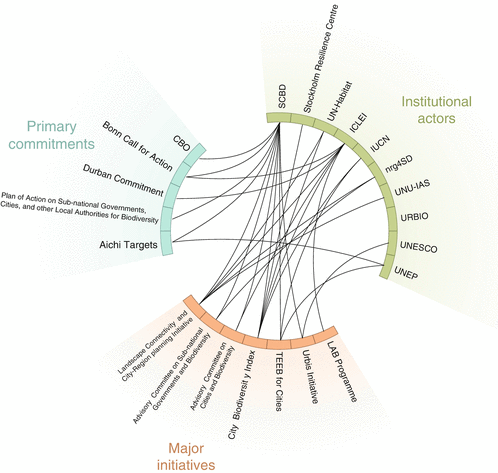
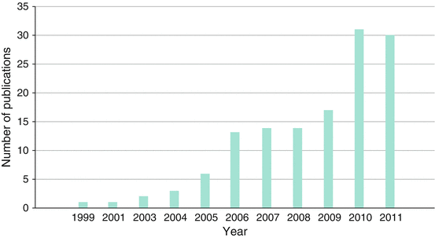

27.1 Introduction
It has been said that “if the 19th century was the age of empires, and the 20th century the age of nations, the 21st century will come to be known as the age of cities” (Choa 2012, p. 79). Furthermore, as the earlier chapters in this book make clear, important parts of the battle for sustainability will be won or lost in cities. To a significant degree, sustainability outcomes therefore depend on the effectiveness of the governance regimes of cities across the world. Not only does the majority of the world population live in cities, urban populations are large consumers of ecosystem services (Folke et al. 1997; McGranahan et al. 2005; Grimm et al. 2008), and urban areas are the primary source of global environmental impacts (Ehrlich et al. 1970; Hardoy et al. 2001; Bai 2007). Few cities, even rich cities, are currently managing their biodiversity effectively (but see the case study chapters in this volume for inspiration on what can be achieved). Finding ways to better govern human-nature relations in individual cities and across the global urban system is thus paramount.
The purpose of this chapter is twofold. First, it provides a history of the belated emergence of an interdisciplinary global urban biodiversity and ecosystem services governance agenda, something that only happened in the late twentieth century for reasons described in Chap. 2. Second, because there has been no published global synthesis of the urban biodiversity and ecosystem services governance literature to date, it presents an overview of scientific material published on the challenges and opportunities associated with governing urban biodiversity and ecosystem services at the local, national, regional, and global scales. The chapter concludes by discussing what is required to improve governance of urban biodiversity and ecosystem services and sets out a critical research agenda to inform future global assessments of urban biodiversity and ecosystem services, with respect to governance.
It has been noted earlier in this volume that the genesis of urbanism was associated with the breakdown of individual and collective responsibility for the shifting ecological base of human consumption, production and the associated evolution of the form of urban settlements. Failure to embed an ecosystem perspective into the fiscal, regulatory and enforcement regimes can be seen at the global, national and local scale. Before establishing where the current interest in governance of urban biodiversity and ecosystem services emanates from, it is worth clarifying the term governance, in distinction to government. Governance can be viewed as “all ‘collective action’ promoted as for public purposes, wider than the purposes of individual agents” (Healey 2007, p. 17). This can include semi-autonomous relationships between the authorities on various levels, the civil society and private sector and its dynamics over time, with partly conflicting and overlapping agendas. The fragmentation of the capacity of the state to influence the urban system in and of itself has been characterized as the shift from government to governance (Rhodes 1997). With this fragmentation comes the need for governments to operate in a world with a range of other actors and factors influencing outcomes (Stoker 1998). This includes recognizing the capacity of civil society (Lee 2003), how some actors have more influence than others (Healey 2007), how governments are influenced by actors and dominant agendas at other scales (Marcotullio and McGranahan 2007), how governance outcomes are shaped outside the arenas of public control, and the limits of the capacity of the present public institutions (Healey et al. 2002). Which factors influence governance and shape outcomes thus depends on the local context.
In this chapter, we focus on both biodiversity and ecosystem services, and we are particularly interested in the ecology of cities and ecology in cities (cf. Chap. 3). With such a broad scope it is worth highlighting specifically what it is that needs governing and why the city scale is so important. Generalization is not simple – as reading across our rich but diverse city case studies of Bangalore, Cape Town and Stockholm reveals (see Box 27.1).
Although there are many shared biodiversity and ecosystems problems faced by and emanating from cities, the way in which these manifest in different cities is unique, not least because of the biome or region in which they are situated. Furthermore, each city has a distinctive cultural heritage, development history, planning tradition and social structure. Moreover, the knowledge base about the ecology of and in cities is uneven. This is the first global assessment with a focus on biodiversity and ecosystem governance and so the following sections examine the emergence of the field and provide a scientific review of the published knowledge on the subject. The focus in this chapter is general, and does not deal comprehensively with the sector based issues of water, air, food or land. As the previous chapter set out, even within a specific sector like food, there are complex challenges of protecting and promoting biodiversity and ecosystem integrity that must be met not just by the state but by specialists, civil society and governments. These governance responses will moreover take place across a range of scales, from within a particular city to a nation and across the world. Paradoxically, the acknowledgement of the imperative for a global response to the diversity of urban challenges draws attention to the minimal and fragmented city scale traditions of biodiversity curatorship. With this in mind we turn to explore the missing ecology in city governance.
Box 27.1 Ecological and Governance-Related Challenges in a Selection of Cities Around the World
For more information and references, see Chap. 6, the local assessment of Bangalore; Chap. 17, the local assessment of Stockholm; and Chap. 24, the local assessment of Cape Town.
City | Ecological challenges | Governance challenges |
|---|---|---|
Stockholm
| Strategies to densify the city challenges conservation of green areas and wetland habitats. The number of Red-Listed and keystone species, such as oak trees, in urban areas is decreasing. Expected climate changes such as warmer air and water will further affect the future floral and faunal species composition and behavior. | A high exploitation pressure and a system of self-governing local municipalities challenges regional conservation planning. Long-standing lack of realization within planning of the importance of mitigation and adaptation to climate changes. Protected areas do not match critical ecosystem interactions. Underfunding and attempts to find alternative uses of the green areas often leads to degradation. The role of informal land management such as allotment gardens is poorly recognized but has gained support by changes in current planning frameworks under way of recognizing the importance of ecosystem services for sustainable regional growth. |
Bangalore
| The fast-growing city periphery experiences a relatively higher fragmentation and loss of vegetation than the city core. Related changes include deterioration of biodiversity and soil quality, aggravation of urban heat island effects, increased pollution of air, land and water, flooding, water scarcity and disease epidemics. Citywide challenges include encroachment on urban water bodies, severe water and air pollution, extensive tree felling, development of green spaces into built-up land and an increase of water-hungry, exotic species in parks. It is expected that the main future challenges will be of rising temperatures due to climate changes, and scarcity of clean water. Loss of lakes, wetlands and urban green spaces are expected to contribute to increasing the challenges. | A multiplicity of governance institutions with overlapping and often uncoordinated jurisdictional responsibilities prevents effective ecosystem management and urban planning. There is little formal recognition of existing and potential role of the civic society, which is directly involved in ecological management as garden owners and park visitors. Furthermore, civic society networks monitor lake encroachment and work towards urban ecosystem protection and restoration at large. |
Cape Town
| Population pressure creates challenges for the biodiversity-rich lowland areas compared to the highly elevated and formally protected Table Mountain. While local vegetation is fire-dependent and does require natural burning regimes to maintain ecosystem health, accidental fires started inadvertently by people can lead to too frequent and uncontrolled burning that poses danger to nature, people and property. Animals, such as baboons, frequently visit neighborhoods, causing human-wildlife conflicts. Formal housing and commercial development sees the ongoing conversion of remnant land. Informal settlement encroaches on remnant patches of biodiverse vegetation and formal conservation areas. Rivers and wetlands around the City have been impacted by urbanization, for example by pollution, canalization and being cut-off from their connected reaches. | While good national, provincial, and local environmental legislation and policies exist, implementation and enforcement is often weak, due to conflicting demands, lack of implementation mechanisms, or fiscal restraints. Environmental conservation has lower priority than other areas of city development, and is not yet effectively integrated across complementary departments and initiatives. Conservation targets for national vegetation types show that all vegetation types confined to the lowland areas are poorly conserved and currently fall below their conservation targets. Insufficient remnants remain to conserve representative diversity. Several lowland areas have a number of smaller reserves but the scale, number and connectivity of these smaller reserves do not meet identified conservation goals. |
27.2 Understanding the History of Urban Biodiversity and Ecosystem Services Governance
Ideas change – and this is no truer than in the work on urban biodiversity and ecosystem services. The fluid terrain that we are reporting on is made more complex because understandings of cities and ecological systems are both new and changing fairly rapidly. The values underpinning how contemporary cities should be managed have developed dramatically over the last 200 years as cities themselves have grown and, as a result, the nature of the urban ecological interface is not a static field of enquiry. In Chap. 2 we noted the failure to address the post-industrial-revolution splintering of urban development from its ecological hinterland and base; a situation only recently challenged by the Cities and Biodiversity Outlook – Action and Policy (Secretariat of the Convention on Biological Diversity 2012) call to reintegrate biodiversity into the regimen of urban management and planning. This global endorsement of the imperative of addressing the urban scale represents a milestone, in which urbanization has finally been recognized as a necessary component of the international and local biodiversity governance agenda. However, this is a relatively recent development and one that still lacks adequate international uptake. Of special concern is the significant portion of the urban world population that lacks any locally applicable and robust scholarship on ecosystem and biodiversity challenges and opportunities, and for whom the value of new scientific research in shaping urban governance is minimal. The overlap between cities that lie in the scientific shadow and cities that are rapidly expanding and are often poorly managed is high, making the geographical expansion of the urban biodiversity and ecosystem agenda a prerequisite for global impact.
The move to greater recognition of urban biodiversity and ecosystem services within science and policy has been accompanied by increasing cross-disciplinary academic efforts and, to some extent, cross-sectoral professional initiatives. We begin our overview of how urban areas have been identified as key sites of biodiversity action by tracing the emergence of an interdisciplinary global urban biodiversity and ecosystem services governance agenda, and remain mindful that acceptance by many may also imply ownership by none.
27.2.1 The Emergence of a Global Urban Biodiversity and Ecosystem Service Governance Agenda
The relationship between cities and environmental degradation has long been of concern to urban dwellers, although historically the state of the environments of cities was only considered important given the threat of disease. The emergence of penicillin muted the focus of municipalities on the public health threats posed by poor quality air, water and waste for many decades. Recently though, the understanding of the link between effective governance and the urban environment has once more come under scrutiny, though now in relation to global environmental change and the global environmental agenda (Rees and Wackernagel 1996) rather than the threat of disease, although that too is shifting with a resurgent interest in the complex systems that underpin urban health and well-being.
Cities started to grow quite rapidly in Europe and North America following the industrial revolution. Pollution became a serious issue affecting human health, but urban expansion also impacted the integrity of ecosystems (e.g., through the disruption of the biochemical cycles) (Haughton and Hunter 1994). After the Second World War and a following liberalization of global trade, cities developed from having mainly local and regional impact, to becoming global drivers of environmental change (e.g., through land use change) (Marcotullio and McGranahan 2007; Lieberherr-Gardiol 2008) (see also Fig. 2.2).
The contemporary environmental agenda focusing on global environmental change emerged in the early 1970s. Awareness of environmental degradation and the planet as a system with limits to growth emerged in both civil society and among decision makers (cf. Meadows et al. 1972). The environmental agenda of cities is thus necessarily woven into the history of the wider global environmental agenda (Sánchez-Rodríguez et al. 2005; Seto et al. 2012) and the development agenda (Parnell et al. 2007). Recognizing cities as engines of economic growth and centers of production and consumption also implies acknowledging that cities draw on resources from all over the globe (Redman and Jones 2005). Significantly, echoing a point made elsewhere in this volume, the new awareness of the importance of urban ecological governance reform bridged the global and local scales, and conceptualized cities as embedded in a larger natural hinterland – (a hinterland which, given new transportation and distribution capacities, may or may not be physically contiguous). This locational splitting of cities and their resource base compounds the complexity of the governance challenges, thus creating imperatives for internationally orchestrated improvements to urban ecosystem management.
The massive growth of cities in Africa, Asia, and Latin America in the late twentieth century, often without any bulk infrastructure for sewerage or systems of urban regulation to protect the environment, resulted in considerable urban environmental degradation (McGranahan and Satterthwaite 2003; Marcotullio and McGranahan 2007; Pieterse 2008). Indeed, it is in these cities of the Global South, where the majority of future global population growth is expected, that some of the most severe public health and urban ecosystem and biodiversity challenges lie (Parnell et al. 2007), not least because of their weak systems of formal government and planning.
Cities have rarely been a central issue in the international environmental politics arena (Puppim de Oliveira et al. 2011). An early exception is the report Our Common Future (WCED 1987) that included a chapter on urbanization and which led to mainstreaming of the term “sustainable development.” It recognized a rapid urbanization at a global scale and the central role of cities in the global economy as “the backbone for national development,” suggesting that the prospect of any city “depend(ed) critically on its place within the urban system, national and international. So does the fate of the hinterland, with its agriculture, forestry, and mining, on which the urban system depends” (WCED 1987, p. 196). The report had a particular focus on ‘less developed’ countries and highlighted the lack of capacity of local authorities to deal with uncontrolled population growth. Many African and Asian states were described to have institutional structures highly influenced by their time as colonies, with governance systems intended to govern a rural economy and society, and leave cities as metropolitan spaces of the colonial elite. The political, institutional and legal frameworks in most Latin American (and by implication, African and Asian) cities were held to be inappropriate and unable to match the challenges of rapid urbanization (WCED 1987). The report also highlighted that national authorities were not enabling local authorities to deal with environmental challenges; this unleashed the then-fashionable decentralization impetus to drive a new urban ecological agenda.
The role of local authorities in environmental governance gained further focus during the Earth Summit in Rio de Janeiro in 1992. The event, being a direct response and follow on from Our Common Future, resulted in the initiation of Agenda 21, a program for action addressing actors at all levels of society and focusing on the promotion of sustainable development. Local authorities were asked to prepare Local Agenda 21 (LA21) plans based on motivations that included statements such as: “In industrialized countries, the consumption patterns of cities are severely stressing the global ecosystem, while settlements in the developing world need more raw material, energy, and economic development simply to overcome basic economic and social problems.” (UNCED 1992, p. 45). Countries were encouraged to assess the environmental impacts of current urban policies and growth, and cities were advised to establish networks for cooperation and sharing of best practices. Significantly, what the LA21 program signaled was the importance of cities and other local authorities as important sites of ecosystem government and governance. Since then, the issue of the most appropriate scale of biodiversity and ecosystem governance has been an enduring concern.
Concern over defining the most appropriate scale of action is key, as cities typically follow a trajectory from very local environmental problems to improvement of living conditions by dispersing these challenges both spatially and temporarily, consequently having an effect on long-term global environmental status (Marcotullio and McGranahan 2007). Reflecting how hard it was to insert the global urban agenda into the international environmental governance arena, McGranahan and Satterthwaite (2003) recall that both the urban parts of Our Common Future and Agenda 21 were almost dropped due to political disagreements. The progress on LA21 in cities was, unsurprisingly then, slow (Allen and You 2002). In 2005, the landmark United Nations (UN) report on ecosystem services, the Millennium Ecosystem Assessment (MA 2005) was launched, which, whilst including a sub-section in the ‘Current State and Trends’ Section on ‘urban systems,’ was critiqued as not substantially addressing urban areas throughout the Assessment (Alfsen et al. 2011). Later, in the context of a predominantly urban world, there has been an increasing recognition of cities as actors and important areas of work under the Convention on Biological Diversity, e.g., through the Curitiba declaration in 2007 and later initiatives leading to the Cities and Biodiversity Outlook (CBO) project and publications (Secretariat of the Convention on Biological Diversity 2012). During COP9 of CBD, the decision IX/28 was adopted, encouraging parties to recognize cities in National Biodiversity and Action Plans including the preparation of local strategies and action plans, in addition to initiating an evaluation tool for cities – The City Biodiversity Index (CBI) (see Chap. 32). At COP10, decision IX/28 was complemented by a Plan of Action on Sub-national Governments, Cities and Other Local Authorities for Biodiversity, giving further advice to parties and a request for an “assessment of the links and opportunities between urbanization and biodiversity for the eleventh meeting of the Conference of the Parties” (UNCBD 2010: X/22). In June 2012, twenty years after the first Rio meeting, world leaders met in Rio and highlighted in the outcome document that if “well planned and developed, including through integrated planning and management approaches, cities can promote economically, socially and environmentally sustainable societies” and emphasized “promotion, protection and restoration of safe and green urban spaces; safe and clean drinking water and sanitation; healthy air quality” (UN 2012, p. 26).
This, alongside the introduction of an urban chapter into the fifth assessment report of the Intergovernmental Panel on Climate Change, gave hope that the urban question was now firmly on the international environmental policy agenda. The argument made across this volume – that city scale action is a necessary but not sufficient requirement to meet future ecosystem and biodiversity challenges – only underscores the importance of international (and national) action to make cities more resilient.
Outside of UN processes, many cities across high, medium and even low income contexts have continued to try to deal with problems related to environmental risk, ecosystem health and sanitation. Livability and smart growth policies have received an increasing focus in cities located in rich countries; they aim to reduce urban sprawl into surrounding land by cleaning up the core areas of the city like old industrial sites (typically waterfronts) and making city-center life more attractive for middle- and high-income citizens that often live in suburbs (Allen and You 2002). Cities in developing countries have also struggled with rapid spatial growth. One third of the children growing up in cities live in slums where they are exposed to polluted rivers and air and hazard pollutants (UNICEF 2012). The environmental dimensions of wider urban problems have thus become much more central, such that it is now almost impossible to uncouple a discussion of urban development from that of the urban environment and its ecological base (Allen 2003; Satterthwaite 1997; Swyngedouw 2005).
One aspect of the urban environment that has received relatively poor attention, not just with respect to governance issues, is that of biodiversity. As in the case of climate change and the C40, where there is a global movement to address biodiversity concerns, it has once again been cities, not nation states, which have been at the forefront of the global mobilization. Recently, initiatives by cities to share best practices and support the aims of the Convention on Biological Diversity (CBD) include support for the Curitiba Declarations (2007, 2010), the Durban commitment (2008) and the Bonn call (2008). Gradually, a global movement for biodiversity and ecosystem services that incorporates an overt urban emphasis is emerging in the international community.
Figure 27.1 captures the rich tapestry of organizations involved in and driving an urban biodiversity and ecosystem governance agenda at the global scale. These are both formal institutional bodies of the UN system, but also powerful global NGOs such as ICLEI. A number of high profile international meetings have generated consensus on the key issues and parties have made commitments to implement actions to achieve targets. Learning from past difficulties around implementation, global programs of action now provide the support structures for implementation. Of note in this regard are the diverse major initiatives highlighted in Figure 27.1. The implementing actors for urban biodiversity thus draw not only on pure ecologists, but also statisticians, planners, medics, economists, and social scientists.

Fig. 27.1
Overview of global governance arrangements for urban biodiversity and ecosystem services (Prepared by and published with kind permission of © UN Habitat 2012. All Rights Reserved)
27.2.2 Interdisciplinary Perspectives
There are well-known and established bodies of research exploring human–nature relations in and of cities, from disciplines including geography, history, archaeology and, of course, planning. Indeed, there is a long history of attention to human–nature relations through design and planning practice (Wilkinson 2012). Since the emergence of town planning as a discipline, human–nature relations have been high-lighted through the Chicago School of planning, the early British town planners such as Ebenezer Howard (1850–1928), Patrick Geddes (1854–1932) and his influence on Lewis Mumford, and later on through more detailed practice-based attention of how to design with nature. American sociologists at the Chicago school, for example, began investigating human behavior and the environment in cities already in the 1920s. From the 1970s, environmental planning emerged as a sub-discipline (Slocombe 1993) and from the 1990s onwards this relationship is explored through the sustainability discourse (e.g., Owens and Cowell 2002; Rydin 2010). Most recently, the emerging field of urban ecology has taken up this interdisciplinary perspective (McDonnell 2011). Urban ecology is defined as “the study of the ways that human and ecological systems evolve together in urbanizing regions” (Alberti 2008, p. xiv), and it “integrates both basic (i.e., fundamental) and applied (i.e., problem oriented), natural and social science research to explore and elucidate the multiple dimensions of urban ecosystems” (McDonnell 2011, p. 9).
The emergence of the field of urban ecology is significant because urban areas were not a research priority among ecologists until late in the twentieth century (Grimm et al. 2008). Born of a narrow focus on urban biotopes and concern over introduced species (Sukopp 2002), after the 1970s a new approach emerged that focused on the city as a whole, with a focus on energy flow and nutrient cycling in this system (Wolman 1965; Boyden et al. 1981; Sukopp 2002). The more recent development within research on urban ecology views “cities as heterogeneous, dynamic landscapes and as complex, adaptive, socioecological systems, in which the delivery of ecosystem services links society and ecosystems at multiple scales” (Grimm et al. 2008, p. 756); this change incorporates the field of landscape ecology (McDonnell 2011). As human-dominated systems, a shift from a traditional biophysical focus to a more social and interdisciplinary one is perhaps most logical in cities, and such studies are now increasing in numbers following landmark articles that identify humans as an important driver of environmental change from the local to the global level (such as Berkes and Folke 1998 referred to in Young and Wolf 2006). Key projects aiming to address the urban-ecological knowledge gap include the recent work on urban long-term ecological research programs (LTER) studying Baltimore, Phoenix and Maryland in USA (Grimm et al. 2000). The city case study chapters in this volume illustrate the huge range of work that is being undertaken at a local scale in the area of urban biodiversity – not all efforts are centrally concerned with governance, but for those stewards of the cities’ ecosystems, the locally credible science provides the evidence base for policy reform and implementation.
Sociologists and geographers are among the social scientists whose studies, influenced by Marx and his concepts of labor power, metabolism, and uneven development, generated a massive body of work known as political ecology. Political ecologists investigate the production and transformation of social nature and its role in the differentiation of space at a variety of scales with recent emphasis on how society relates to nature under dominating neo-liberal policy frameworks (Pincetl et al. 2011). Urban political ecology research has been especially fruitful in the study of power relations and material flows and fluxes operating across regions and cities (cf. the influential work of Swyngedouw 2006).
Over time and through the work of sociologists, economists and psychologists, studies of social and ecological, as well as economic and technical aspects of the city have become more integrated in urban ecology (Young and Wolf 2006). Research, stemming from geography and political science as well as ecology, has broadened its scope from within cities – viewing cities as something separate from the world – to a research integrating cities into a wider landscape – where they are recognized as global actors of change (in line with Berkes and Folke 1998). A more recent perspective in urban ecology views cities as microcosms – systems where the change predicted in estimates of global environmental change are happening more rapidly. Pioneering social and environmental research is now focused on how to respond to the catalytic role of cities (Grimm et al. 2008; McDonnell 2011). From a governance perspective, recognizing that these ‘city microcosms’ are far from closed (because the contact between the urban and rural is blurred and the administrative boundaries do not neatly correspond to those of ecosystems) is more relevant than ever.
Moving to the global perspective, cities have also been studied as a global network rendering the planet not only increasingly human dominated, but also urban dominated as “cities need to be viewed as loci in multiple networks of relationships at different scales, rather than as entities” (Ernstson et al. 2010a, p. 537). This interpretation comes from geographers like Beaverstock et al. (2000) in their notion of a world city network or metageography. Swyngedouw and Heynens (2003, p. 899) develop this notion of urban political ecology by suggesting that “the socioecological footprint of the city has become global. There is no longer an outside or limit to the city, and the urban process harbors social and ecological processes that are embedded in dense and multilayered networks of local, regional, national and global connections.” This perspective echoes urban ecological studies of cities that view cities as human-dominated ecosystems, with authors like Bolund and Hunhammar (1999, p. 294) arguing that “when humanity is considered a part of nature, cities themselves can be regarded as a global network of ecosystems.”
Notwithstanding the well-established and disciplinarily diverse roots of research on urban ecology, it is true that over the last decades there has been a dramatic increase in awareness of biodiversity and ecosystem services issues in and of cities. Moreover there has been a massively expanded response from residents, civil society, local government as well as national and international stakeholders concerned to respond to the critical biodiversity challenges presented in and by cities. In an effort to ensure that we maximize the potential of knowledge to inform practice – for scholars to learn from practice and to encourage the documentation and dissemination of pathways to enhance urban biodiversity and ecosystem services – our attention now turns to providing a synthesis of the scientific literature on governing urban ecosystem services.
27.3 Synthesis of the Scientific Literature on Governing Urban Ecosystem Services
27.3.1 Scope of the Synthesis
A synthesis of the governance challenges and opportunities relating to urban biodiversity and ecosystem services is presented here; it draws on a systematic literature review carried out specifically to inform the CBO process (Sendstad 2012). The purpose of the literature review was to take a first step towards generating a much-needed comprehensive global assessment of knowledge of urban biodiversity and ecosystem services governance. The rationale for drawing on a systematic review of the academic literature is to be transparent about the published, peer-reviewed scientific foundation of knowledge on governing urban biodiversity and ecosystem services. We recognize that local knowledge, traditional knowledge and other knowledge contained in reports generated outside of academia (i.e., grey literature) are also important to the governance of urban biodiversity and ecosystem services. Indeed there is much other material on biodiversity and ecosystem services that is used by cities and urban communities to inform regulatory, distributive and restorative practices. However, as there tends to be a scientific integrity and professional weighting associated with peer reviewed published material, for example in the medical profession but also in global assessments such as the IPCC, our focus at this stage falls on this scientific foundation (see the Preface of this volume for a further discussion of literature included in the CBO).
The synthesis of challenges and opportunities relating to the governance of biodiversity and ecosystem services draws on the published findings of 138 scientific articles published in English in 76 journals. The papers were sourced using categories of words to represent the three main focus areas of the study: governance – of ecosystem services – in urban settings.1
Relying on the published academic English language literature creates a significant geographical bias. A total of 88 cities or urban regions from 23 countries were represented in the studies reviewed. There was a clear bias towards Europe (32 studies from 27 cities/urban regions from 9 countries), North America (28 studies from 26 cities/urban regions in USA and Canada) and China (22 studies of 11 cities/urban regions). In addition to these studies, there were also some studies looking at a large number of cities within a given country, e.g., studying land use change response to policy across cities. Africa, South America and parts of Asia are almost totally invisible in the literature, regions on which published data is known to be scarce. A further reason for the lack of profile of cities in the developing world may be limitations due to the selected databases and keyword combinations. Furthermore, in large parts of the world, scientific studies are often published in languages other than English (e.g., French for Africa, Spanish for Latin America, and Russian or Chinese); this results in potentially valuable studies going undetected by the database searches. However, the search results reflect a more general gap in scientific knowledge about the experiences in these under-researched regions. It is thus imperative that future reviews undertake a geographical and thematic corrective, if necessary embracing grey literature and undertaking primary research to ensure better global coverage and to extend the range of issues profiled.
The absence of published scientific work on many important issues and places must be noted as a major distorter of our collective understanding of the scale and scope of the challenges and opportunities for biodiversity that are presented by urbanization. The fact that many of the global biodiversity governance challenges emanate from specific cities or regions suggests that the currently geographically-incomplete knowledge pool may critically undermine universal or networked responses to urban biodiversity problems. Furthermore, the value of the existing scholarship on urban biodiversity governance is undermined by the fact that ideas about biodiversity governance are neither universal, nor do ecological management practices necessarily transplant well from city to city. Given that the bulk of the world’s population lives in those cities that have the least biodiversity research, gaps in the sources that inform governance responses must be highlighted as a very serious concern. That said, there is, despite a somewhat tardy beginning, now a growing interest in the governance of cities for biodiversity enhancement and protection. Our review suggests that there is sufficient scientific evidence to confirm that how cities are managed impacts both positively and negatively on biodiversity: governance regimes do matter.
Despite its relative youth, the field of biodiversity and ecosystem services has generated a good deal of peer-reviewed material on issues that are explicitly linked to questions of urban governance (see Fig. 27.2). A number of the earlier chapters in this book review the state of knowledge in specific sectors and highlight the uneven uptake of the science as well as the geographically distorted limits to knowledge on critical ecosystems on which cities depend and which city growth impacts (see, for example, Chaps. 10, 12, 21, 22, 26, and 33). Even where there is sufficient science it does not follow that this knowledge will inform action. Several of the published studies highlight the lack of awareness and narrow understanding of ecosystem functioning among decision makers, suggesting that it is not just residents who struggle to absorb the arguments of science at the local (Moll 2005; Li et al. 2005b), regional (Merson et al. 2010) and global scale (Puppim de Oliveira et al. 2011). It is clear then that advancing the urban biodiversity and ecosystem services agenda is only in part a question of proving the biological science; a dominant challenge seems to lie in the institutional capacity to govern biodiversity and ecosystem services as well as in shifting the way science is viewed and used in an urban setting characterized by conflicting views and interests among stakeholders. Before looking at how the science has been used by cities, we pause to reflect on the scope and utility of the available science.

Fig. 27.2
Number of publications sorted by year for studies included in the literature review. The review was finished in spring 2012 so some studies have been included from this year (Modified from Sendstad (2012). Published with kind permission of © Marte Sendstad 2013. All rights reserved)
27.3.2 Urban Biodiversity and Ecosystem Services: Governance Challenges
27.3.2.1 Do We Have Enough Science to Reliably Inform Implementation?
At the highest level there is a lack of scientific knowledge, especially about urban ecosystem structure and function (Boyer and Polasky 2004; Niemelä et al. 2010). There is also a lack of scientific literature on urban environmental governance (Wilkinson 2012). As urban governance capacity to implement the findings of scientific research improves, the extent of the pure science gap will become more obvious, especially in cities that currently lack a tradition of using scientific support for ecosystem management. In some cities, there is available science to better inform the governance decisions of city managers, and the published literature is skewed to these well-resourced and well-researched places (see Chap. 17, the local assessment of Stockholm, which sets out the role of science in one of the leading evidence-based biodiversity transformations of urban ecosystem management, but also Chaps. 16 and 24 on the middle-income cities of Cape Town and Istanbul, where rich traditions of local ecological research now inform transformative municipal practice). These cities are perhaps exceptions for the depth of knowledge they are able to garner, but the greater problem is not simply the absence of science – there is a spatial mismatch between where the scientific studies occur and where the world’s urban ecosystem and biodiversity problems manifest.
Planners and decision makers, even those committed to a more evidence-based practice (Alonso and Heinen 2011) are not always able to use the publications of scientists for a number of reasons. First, practitioners struggle to accommodate the uncertainly that scholars outline (Fang et al. 2006; Niemelä et al. 2010; Su and Fath 2012). Second, at the local level in particular, there is a dearth of specialist ecological data and analysis needed to support legitimate regional planning and policy development (Peterson et al. 2007; Mendiondo 2008; Boyer and Polasky 2004). Third, while there may be specialist studies available, there is a lack of scale- and context-appropriate scientific tools and methods to capture the complexity of interacting systems, the limits of ecosystems and the drivers of change (Merson et al. 2010; Puppim de Oliveira et al. 2011). Finally, even in contexts where decision makers have access to relevant knowledge, it may take time before this has an effect on policy, public awareness and political action (Lieberherr-Gardiol 2008; Niemelä et al. 2010, p. 3238). One study from New York Metropolitan Area suggested that the connection between science and policy was weak because the scientific view was considered just one of many stakeholders involved in decisions (Alfsen-Norodom et al. 2004). Furthermore, while some see linking science and the views of stakeholders as offering potential for knowledge co-production (Bayá Laffite 2009), there are significant paradigm differences to be dealt with in mediating approaches to urban biodiversity and ecosystem service issues (e.g., Antrop 2001).
27.3.2.2 Political as Well as Intellectual Legitimacy Are Key
Cities themselves are complex systems, and introducing a new emphasis on the science of ecology into how urban areas are managed presents real challenges – not least because of the lack of political legitimacy traditionally associated with ‘green issues.’ Achieving the necessary political support and changing the habits of residents is also made difficult by the lack of awareness about the diversity of nature, its complexity, as well as human dependence on ecosystem functions across scale (Borgström et al. 2006; Wolch 2007). Some studies suggest that a personal experience may be important for caring about the protection of nature (Dearborn and Kark 2009). In a study by Jim and Chen (2006, p. 342) in Guangzhou (China), residents placed high values on services like air quality and aesthetic enhancement in contrast to facilitation of biodiversity, water treatment, and flood abatement, suggesting that they were unable to value what they could not see or had not experienced directly.
27.3.2.3 Integrating Environmental Equity and Justice
Governance or management of urban biodiversity and ecosystem services inherently raises questions of environmental equity and justice across spatial and temporal scales. Biodiversity and ecosystem services are often unequally distributed within the city (Li et al. 2005a, b); low income and minority groups tend to have lower access and be disproportionately burdened by environmental hazards (Bullard 1997; Adamson et al. 2002; Wolch 2007; Boone 2010; Perkins 2010). Poor people may be perceived as responsible for environmental degradation in spite of having a relative low per capita impact (Zérah 2006; D’Souza and Nagendra 2011) or having been allocated environmentally risky sites (Ernstson et al. 2010a). Ecosystem degradation may, however, be an important cause of urban poverty (MA 2005). Moreover, people who have a higher per capita responsibility for degradation of ecosystem services are often not the ones experiencing the cost. Costs related to environmental degradation and leading to quantitative or qualitative loss of biodiversity and ecosystem services may be displaced across temporal and spatial scales. Environmental inequity may also occur between urban and rural regions (see e.g., Gutman 2007; Sarker et al. 2008), but following globalization, equity is not merely a local or regional issue. The social and ecological costs of improved urban living conditions can be transferred through global trade flows (Hagerman 2007; Meng 2009). The role of institutions and institutional mechanisms in facilitating and influencing people’s access to ecosystem services is critical for addressing distributional issues, ensuring that ecosystems are managed in a fair and equitable manner to all involved stakeholders. Payments for Ecosystem Services (PES) schemes are by some considered to be a more efficient approach to biodiversity and ecosystem services conservation. PES schemes do not, however, necessarily integrate concerns of equity, and may have the effect of “possibly even accentuating poverty and equity gaps by putting a cost-effective price to previously low priced or free services” (Pascual et al. 2009).
27.3.2.4 Gaps in Institutional Capacity Undermine Governance Effectiveness
The most frequently documented barrier to more effective ecosystem service management in cities in the academic literature is that of the institutional capacity of formal authority and structures, including the ability of such structures (most often local government) to plan and regulate ecosystem services. Further dimensions of the institutional gap relate to the ability of the responsible parties to acquire and handle relevant urban scale information and cooperate across levels of environmental and urban decision-making. This is not just a local problem, as national and international levels of governance have rarely focused on expanding cities’ powers and resources in negotiating policies on the governance of ecosystems (Puppim de Oliveira et al. 2011).
Introducing new governance systems for urban biodiversity and ecosystem protection in cities is not simple. Examples from China are illustrative. In China, the central planning system was developed before decision makers had any significant awareness of the value of integrating environmental concerns into urban planning (Fang et al. 2006; Xu et al. 2011). Embracing the value of ecosystem services often means setting the economic imperatives of city development against the ecological. Findings from a study of Beijing showed that practically this means that compensation mechanisms may fail to protect green areas from real estate development if the fee developers must pay to build on green areas is significantly lower than the income prospects (Li et al. 2005a). Li et al. (2005a, p. 330) further found that the design of the green areas in Beijing focused more on “beautification” than on conserving the ecological value as habitat (see Chap. 3 for more information on trends and challenges in design for biodiversity and ecosystem services). The Chinese experience is not unusual; cities everywhere are faced with having to devise new norms and standards and embed the regulatory and enforcement practices into the planning systems to ensure ecosystem integrity. For most cities, this is an incremental and even ad hoc process that has not delivered a perfect ecosystem management system and the complex thing is that fragmented governance may erode ecological integrity by lack of holistic planning and responsibility (Alfsen-Norodom et al. 2004). This was the case in Toronto, Canada, where an ecologically valuable moraine area was developed piece by piece, due to approvals from different authorities (Wekerle and Abbruzzese 2010).
27.3.2.5 Navigating Competing Urban Priorities
One of the greatest difficulties for municipalities is to introduce a new policy priority into an already resource-stretched institutional environment, especially popular social policies like housing delivery (Barthel et al. 2005; Asikainen and Jokinen 2009; Wekerle and Abbruzzese 2010). Box 27.2 draws from the experiences of a number of cities to show how difficult it is to change the direction and mode of governing in ways that embrace biodiversity. Biodiversity does not simply compete with other spending or development opportunities. Delivery on economic growth, jobs and housing constructs its own new pressure on ecologically valuable areas and several studies suggest that ecosystem services are given a lower priority compared to housing (Barthel et al. 2005; Asikainen and Jokinen 2009; Wekerle and Abbruzzese 2010), infrastructure, or jobs (Li et al. 2005a; Peterson et al. 2007; Wekerle et al. 2007; Wang et al. 2009), even if there are strategies in place to protect areas of particular value (Jonas and Gibbs 2003; Li et al. 2005a; Ozawa and Yeakley 2007).
The multiscalar dynamics of the ecosystem create major urban governance challenges because decisions across scales of government and have long-term implications that extend beyond the period for which elected officials are responsible. Ironically, the system of elected democracies and rotating political leadership may mitigate against the more resilient governance of cities, this is especially true in cites that lack strong regulatory or administrative instruments to ‘depoliticize’ everyday practices of urban management that foster or uphold urban biodiversity and ecosystem integrity. It is important that ways are found for the long-term sustainability of cities and effective ecosystem service management to be taken into account through political decision-making processes. The case of Bangalore (Box 27.3) is an interesting example where traditional values, rather than state regulation, provide the basis for collectively acknowledged values and practices that preserve biodiversity in the city.
Box 27.2 Competing Priorities in Urban Policies; The Examples of Rio de Janeiro City and Tokyo
For more information and references, see Chap. 29, the local assessment of Rio de Janeiro City; and Chap. 8, the local assessment of satoyama and satoumi landscapes, Tokyo.
Rio de Janeiro city
| The city of Rio de Janeiro is expanding at its fringes due to growing informal settlement areas as well as private and privatized public areas. Some of the world’s most biodiversity-rich wetlands, and vegetated and forested areas are being covered, regardless of their formal protection status. |
Local inhabitants have initiated conservation and re-introduction of native local species. In the city at large, official legislation can be efficient but is continuously altered to favor development projects. One example is the golf course for the 2016 Olympic Games, which is being developed inside a high-priority conservation zone. | |
Differing perspectives between people of different income groups can challenge whether or not urban greens be given priority in plans and management. Inhabitants in a low-income area were found to have a large interest in active work to conserve local ecosystems, whereas inhabitants in a high-income area were found to appreciate urban green areas but had a limited knowledge on the ecological benefits and did not actively engage in management of the urban greens. | |
Satoyama
and
satoumi
landscapes, Tokyo
| Following a rapid and extensive urbanization in Japan and thus a decrease in human management of rural land, satoyama and satoumi, i.e., biodiversity-rich landscapes with long-standing management traditions, have decreased and degraded, leading to an overall decrease of biodiversity. At the same time, the support to transfer satoyama and satoumi to urban areas is undermined as the landscapes are treated separately from other types of urban nature in official conservation policies, such as the Japanese National Biodiversity Strategies and Action Plan (NBSAP). Japanese national policies typically provide a weak support for urban nature, as plans to enhance green infrastructure generally are proposed only after development plans are accepted, and the inter-relation between such plans and the urban satoyama and satoumi systems are not clearly identified. In addition, the governance structure also creates challenges: although the official, national aim is to promote conservation, regeneration and utilization of satoyama, this is often undermined when local ordinances instead tend to favor economic growth and development, which is shown in Tokyo's increasingly dense city core, where the competition for land is extremely high. |
Box 27.3 Traditional Knowledge and Civic Society Initiatives Protect Urban Greens in Bangalore, India
For references and more information, see Chap. 7, the local assessment of Bangalore.
Bangalore: Protection of urban greens and blues by a complex web of multiple actors, traditions and norms
|
Bangalore is India’s fifth largest city and with a population approaching nine million, it is one of the world’s most rapidly developing cities. Economic growth, paired with a multiplicity of governance institutions with overlapping and often uncoordinated jurisdictional responsibilities, has had a major impact on ecosystems and biodiversity. However, the civic society is involved indirectly in management of urban forests and lakes in a variety of ways, ranging from monitoring encroachment to engaging with city municipalities and political entities for restoration. They are also directly involved, as residential garden owners, park and lake visitors, and initiators of public activities such as lake restoration or environmental public interest litigations. |
Social networks, such as the environmental activist group Hasiru Usiru, have contributed substantially to keep issues of urban conservation in the forefront of public awareness in recent years. Their efforts have, for example, resulted in influential court rulings on issues of tree felling (Sudhira 2007; Enqvist 2012). The city’s bird-watching community has facilitated environmental monitoring and awareness by online discussion forums, meetings and events. In the annual Bird Race, participants have cumulatively logged over 230 species of birds in and around Bangalore in a single day. |
Local norms and traditions commonly contribute to biodiversity protection. Home gardens in Bangalore are rich in plants selected for their cultural and medicinal properties (Jaganmohan et al. 2012). Even in impoverished parts of the city, greenery and plants play an extremely significant role due to the critical social, cultural, religious, medicinal and food-related ecosystem services they provide (Gopal 2011). Historic cemeteries and sacred sites around mosques, temples and churches provide protection for heritage trees, ecological habitats such as anthills, and keystone species such as the sacred figure. New conservation strategies are needed to carry the strong potential for nature conservation of norms and traditions, into the modernization process of the city. |
27.3.2.6 Governance Challenges Related to Scale Mismatch
Challenges related to temporality and scale can be seen as core governance dilemmas. The literature indicates that temporal, spatial, and functional mismatches between ecosystems and the institutions managing them may be an overarching challenge in ecosystem governance (cf. Lee 1993; Cumming et al. 2006) Although scale-mismatch in urban areas as a concept is mentioned overtly in relatively few studies (Borgström et al. 2006; Ernstson et al. 2010b), it is a dilemma that permeates the literature either because of fragmented governance (where several jurisdictions exist within the city or the urban–rural region) or because ecosystem functioning does not align with administrative boundaries (Borgström et al. 2006; Wekerle and Abbruzzese 2010). Box 27.4 provides local examples from Melbourne and Istanbul that detail how scale mismatches in governance can frustrate biodiversity governance. A particular challenge related to spatial mismatch concerns how urban areas link to their regional to global sources of ES (Alfsen-Norodom et al. 2004; Blaine et al. 2006; Gutman 2007; Sarker et al. 2008; Puppim de Oliveira et al. 2011). Studies of aquatic ecosystems and water quality find that land managers upstream can influence ecosystems in cities without taking the needs of urban people downstream into account (Blaine et al. 2006; Sarker et al. 2008). Urban residents however draw on resources from all over the world (Alfsen-Norodom et al. 2004), without necessarily paying the full cost related to ensuring the integrity of the relevant ecosystems from which these resources are derived (Puppim de Oliveira et al. 2011).
Box 27.4 Scale Mismatches Are an Ongoing Challenge for Biodiversity Governance
For more information and references, see Chap. 16, the local assessment of Istanbul; and Chap. 20, the local assessment of Melbourne.
Istanbul
| Spatial planning power was transferred from the central government in Ankara to local authorities in the 1980s. However, a remaining lack of engagement by the civil society in urban development politics allows for the misuse of political power. Although environmental concerns have been taken into account in spatial planning since the 1960s, the management of significant biodiversity locales and ecosystem services is poorly coordinated and fragmented. This stems from a division of responsibilities over several departments within the metropolitan municipality and the central government; poorly coordinated responsibilities; and a complicated juridical framework. As a result, Istanbul faces serious problems for example for the fresh water management, and chronic fresh water shortage is already a long-standing problem. The lack of effective regulations aimed to protect ecosystems, and the weak enforcement of existing regulations, has allowed illegal settlements and developments to expand through valuable areas such as the Ömerli Watershed, wherefrom Istanbul gets the majority of its fresh water. As a result of human activities and the lack of effective watershed management tools, there is an increasing risk of water pollution from different sources such as sewage, industrial wastewater and urban runoff. |
Melbourne
| As the city grows and expands at its fringes, there is an increasing need to address urban growth and conservation objectives, and management of 'native' and 'exotic' vegetation. Four factors will largely determine the degree to which Melbourne will be able to support a healthy human population and flourishing biodiversity in the future: city growth on the fringe; habitat management in established areas; management of green assets; and directions in local biodiversity governance. Melbourne's principal local planning instrument, planning schemes, are developed by local governments within a framework established by the Victorian State Government. However, many strategies to support biodiversity at both local and regional scales are executed poorly due to political and economic pressures. In addition, certain trends of suburban development can lead to a gradual homogenization of biodiversity. For example, a small number of plant species are commonly used in street and landscape plantings in master-planned estates. Greater appreciation by local governments of the interrelationships between biodiversity and human well-being will allow new ‘green’ solutions to be found in everyday planning and infrastructure decisions. Greater integration of environmental policies with other regulatory instruments will also help to promote biodiversity in the city into the future. |
27.3.2.7 Trade-Offs
There are many synergies in governance of urban ecosystem services (ES) and biodiversity, like regulating services supporting a number of other services (Raudsepp-Hearne et al. 2010). It should however be recognized that governing urban ES is not merely about finding synergies, but can often entail navigating trade-offs. This could entail prioritizing some ES at the cost of reducing the provision of others (Rodríguez et al. 2006). One example of this is establishing a homogenous lawn that has recreational benefits, e.g., for sport activities, but has a limited value in terms of people experiencing biodiversity, as that requires a more varied landscape with a higher habitat value. Trade-offs are also common between ES and other goals in policy, both regarding monetary and non-monetary costs and benefits. For example, vegetation does contribute to local climate regulation (Hung et al. 2006), but also requires water, which may be a scarce resource, and vegetation such as trees sometimes must be managed in order to prevent interference with urban infrastructure. Navigating trade-offs raises scale issues but also consideration of the extent to which the decision is reversible (Rodríguez et al. 2006). Matters of environmental equity and justice highlight the challenging trade-offs between various beneficiaries (cf. Rounsevell et al. 2010). Different stakeholders may (unsurprisingly) have very diverging views on these trade-offs and conceptions of their relationship to different ES across the urban landscape – this is politics (cf. Karvonen 2010). These conflicting views need to be taken into account and addressed to be efficient in governance of urban ES (see also Sect. 27.3.3.4, below).
27.3.2.8 Effective Ecosystem and Biodiversity Governance Requires Collaboration
Governing ecosystem processes requires coordination across levels of policy and legislation, as typically all spheres or tiers of government are involved in urban ecosystem services in some way (see Box 27.5) (Peterson et al. 2007). A common issue is that policies focus narrowly on endangered species or habitats, without incorporating ecosystem change over time (Asikainen and Jokinen 2009; Ernstson et al. 2010b). In Sweden, Elander et al. (2005) found that it was challenging for urban planners at the local level to implement national biodiversity strategies, since they were too general and abstract. Bomans et al. (2010) also point out a weakness in spatial policy based on coarse, mono-functional categories, unable to take into account transformations in multiple land uses and related values tied to the rapidly changing urban landscape. Numerous studies indicate a lack of regulation connecting urban consumers of ecosystem services and the people managing the resources they depend on outside the city boundaries (Blaine et al. 2006; Gutman 2007; Sarker et al. 2008; Puppim de Oliveira et al. 2011; Meng 2009). Most cities lack formal regulation, but ironically, comprehensive public regulation (standards) and the associated bureaucracy can also hinder green innovation (Karvonen 2010). For all cities, especially those with weak local government (Bayá Laffite 2009), the challenge is how to work with other stakeholders and communities with strong local knowledge of ecosystems and their uses (D’Souza and Nagendra 2011).
Box 27.5 Challenges to Effective Urban Ecosystem Management That Emphasize the Importance of Cooperation (Adapted from Sendstad 2012)
Coordinating all the actors and tasks necessary to respond to fragmented, heterogeneous and dynamic ecosystems in cities involves significant cooperation. Partnership is a cornerstone of urban ecosystem integrity as:
1.
Responsibility for ecosystems is typically shared between government, traditional authorities, major public utilities and other agencies. In other words, cities do not themselves have all the powers needed for the task.
2.
Cities do not always have the political commitment or fiscal and institutional capacity to govern ecosystems, even if they have the mandate.
3.
Different municipal departments may have conflicting priorities even on the same ecosystems and invariably there are tensions about priorities.
4.
Lack of communication between relevant public and private actors involved in management across the urban landscape may hinder a coordinated approach, both within and between adjacent green areas.
5.
Lack of regional coordination between adjacent municipalities with planning authority may be a barrier.
6.
Cities may depend on ecosystem services, which for a large part, are provided by ecosystems beyond their jurisdiction and control.
7.
Lack of regional coordination may hinder management due to conflicts between administrative units or conflicts may hinder regional coordination.
8.
If individual cities or city regions implement efficient policies this may have a limited global effect if others do not.
9.
Insufficient public budgets for protection, maintenance and enhancement of ecosystem services has led to governments transferring management responsibility to private actors, including volunteers or the private sector in public private partnerships
10.
Voluntary/non-governmental organizations have mixed attitudes to working with government but civil society is often involved (directly or indirectly) in urban ecosystem management; this makes civil society a critical partner.
Sources: Puppim de Oliveira et al. 2011; Wekerle et al. 2007; Wekerle and Abbruzzese 2010; Hutton 2011; Meng 2009; Blaine et al. 2006; Mendiondo 2008; Ernstson et al. 2010b; Barthel et al. 2005; Borgström et al. 2006; Karvonen 2010; Li et al. 2005b; D’Souza and Nagendra 2011; While et al. 2004; Hutton 2011; Schmidt and Morrison 2012; Hagerman 2007; Alonso and Heinen 2011; Antrobus 2011; Wilson and Hughes 2011; Rosol 2010; Pincetl 2010; D’Souza and Nagendra 2011.
27.3.2.9 Governance Failures in Urban Ecosystem and Biodiversity Management
Even where the various parties are able to work together to design policy and regulations there are typically major problems of government associated with enforcement (Li et al. 2005a; Bayá Laffite 2009; Xu et al. 2011). If regulations do have an effect, they may not stop fragmentation of habitats over time (Wekerle et al. 2007). In a study of loss of riparian habitat in Portland, Hillsboro and Oregon City, it was found that even though most development projects were hindered, a few larger projects permitted led to loss of ecological function (Ozawa and Yeakley 2007).
Even more common than governance failures through granting permission for dubious projects is the failure to monitor ecosystem integrity over time. One reason for this is the absence of robust scientific monitoring data, which makes it hard to implement regulations or develop a comprehensive knowledge base for management. This has, for example, been found to be a problem in China (Meng 2009). It is not just the absence of monitoring but also the failure to include all relevant variables of the complex systems and variables across all important scales that erodes the legitimacy of the administrative governance of ecosystems (Blaine et al. 2006; Ernstson et al. 2010b; Meng 2009; Wilson and Hughes 2011; Yli-Pelkonen et al. 2006). These weaknesses in governance capacity are not unique to ecosystem service management (Romero-Lankao and Dodman 2011) but they are especially serious in this domain for, as Baird argues, “unless we significantly reduce the lag time between occurrence of stress and management response we run the very real risk of irreplaceable loss of critical ecosystem functions” (2009, p. 9).
27.3.3 Urban Biodiversity and Ecosystem Services: Opportunities
The published scientific literature generates a rich set of insights into the opportunities for governing ecosystem services in an urban world, though careful interpretation of results is needed as opportunities include recommendations from case studies or more theoretical studies that have not necessary involved assessment of success in practice. Although cities have not traditionally been central to ecological management, it is clear that this is a rewarding scale of action and that targeting better ecosystem service governance in cities presents a grand opportunity to promote resilience. Drawing only from the published work, we have grouped lessons from innovative experiences in urban practice into four sub-sections: ecological management at the city scale; opportunities to expand conventional planning; innovations in urban economics and fiscal management; and the role of civil society. Table 27.1 (see the end of Sect. 27.3.3) summarizes some of the broad range of tools and approaches identified in the literature for governing urban biodiversity and ecosystem services. Other useful tools and instruments for better governing biodiversity through sector interventions can be found, for example, in Chap. 11 on monetary evaluation and payment for ecosystem services.
Table 27.1
Summary of some of the broad range of tools and approaches identified in the literature for governing urban biodiversity and ecosystem services
Tools and approaches | Description | Example | References | Scale of action |
|---|---|---|---|---|
Urban design
| ||||
Larger green areas | Ensure protection of larger less fragmented green areas connected to other green areas in the city as a source of biodiversity and habitat for less disturbance tolerant species, e.g., green belts or larger urban parks | Bogor, London, Mumbai, Seoul, Stockholm | Local-Regional | |
Bioswales | Street design that hinders surface runoff | Grim et al. (2008); Karvonen (2010) | Local | |
Pervious paving | Street design that hinders surface runoff | Karvonen (2010) | Local | |
Green roofs and other forms of vertical greening | Provide habitat, insulate, and reduce urban heat island effect and energy use related to heating/cooling of houses due to its insulation effect | Local | ||
Urban agriculture | Community gardens for poverty reduction; enhancing food security, nutrition and economic status. Urban gardens can also be a food security mechanism, be important learning arenas and reduce the ecological footprint of cities | Bangkok, Badulla, Matale, Moratuwa, Matara, Rosario, Seattle | Local-Regional-Global | |
Regulation of land use
| ||||
Zoning | Zoning may allow a city to prioritize areas for different purposes with varying building densities and regulations of human activity, ensure protection of areas valuable to ES provision, and plan their linkages | Vancouver, Kyoto | Local-Regional | |
Higher level policy | National/Regional law limiting urban expansion into valuable green areas | Tampere | Asikainen and Jokinen (2009) | Local-Regional |
Baseline requirements of private management | Set baseline requirements for management of privately owned land, like incorporating tree planting and maintenance in building regulations. This may include incentive measures for added efforts | Harman and Low Choi (2011) | Local | |
Ensuring access/property rights | For private persons to invest in structures supporting ES, like trees, it is important to ensure long-term access/property rights in, e.g., urban gardening | Barthel et al. (2010) | Local | |
Evidence-based management/planning | Legal tools can be used to require that planning should be based on available ecological knowledge, and include the knowledge and opinions of participants | Yli-Pelkonen et al. (2006) | Local-Regional | |
Planning tools
| ||||
Satellite images | Satellite images covering larger areas were combined with high-resolution images to inform management | Charlotte, Salem | Moll (2005) | Local-Regional |
Indicators monitoring ecosystem change | Indicators on different levels to set targets and measure and monitor ecosystem state over time | Gainesville | Li et al. (2009), Dobs et al. (2010) | Local-Regional |
Biotope Area Ratio | Biotope Area Ratio (BAR) to map surface types | Berlin and Seoul | Lakes and Kim (2012) | Local-Regional |
Scenario development | Development of scenarios to inform planning and stakeholder processes, e.g., using multi-criteria evaluation | Local-Regional –Global | ||
Ecological footprint analysis | Ecological footprints can track progress, provide early warning, support setting targets and drive positive policy change | Wackernagel et al. (2006) | Global | |
Knowledge management systems | Regional ecological knowledge database that are regularly updated to inform planning | South East Queensland | Peterson et al. (2007) | Regional |
Economic instruments and valuation tools
| ||||
Payment for ecosystem services/environmental management | Monetary tools can be applied to enhance ES through city dwellers paying for ecosystem management they benefit from, and adding to regulatory frameworks and incentive mechanisms connecting users and managers. It can also be useful for raising awareness of the value of conserving ecosystems | Local-Regional-Global | ||
Non-monetary valuation tools | Non-monetary evaluation may use indicators to set targets and monitor change in ecosystem function over time and how it relates to human welfare | Dobbs et al. (2010) | Local-Regional-Global | |
Tax measures | Property tax reduction in exchange for commitment to protect important habitat on people’s properties, incentives for investing in green innovation or compensating land owners for restricted development rights | Local | ||
Public funding/awards | Seed funding to support establishment of civil society initiatives, e.g., efforts targeting communities with lower access to ES. Public funding or awards can also support dispersal of best practices and continued effort | Bankok, Badulla, Matale, Moratuwa, Moratuwa and Matara, Seattle | Local-Regional | |
Green budgets | Having a separate budget line for urban greening | Seymoar et al. 2010
| Local-regional | |
Green procurement | Public institutions having green procurement policy, e.g., hospital buying organic food. Such projects can contribute to general awareness raising | Vienna | Lieberherr-Gardiol 2008 | Local-regional-Global |
Management principles
| ||||
Connectivity | Managing/planning a city-wide network of connected green areas of different sizes connecting the city to the wider landscape (green infrastructure). This entails including green areas with varying characteristics, management and ownership | Local-Regional | ||
Diversity | Management of a spectrum of connected habitats to achieve high levels of biodiversity | Local-Regional | ||
Native species | Support native species adapted to the local environment | Bangkok, and in Badulla, Bogor, Matale, Moratuwa, Moratuwa, Matara. | Local-Regional | |
Systems thinking | Holistic management, including control of all pollutants and general dynamics of the ecosystem | Meng (2009) (focus on watersheds) | Local-Regional | |
Change | Focus on nature management as an ongoing process where one recognizes nature as ever changing and dynamic across scales and adapt institutions and plans as a result | Local-Regional | ||
Experimentation | Experimentation to foster learning and innovation: Pilot projects can over time be scaled up experiments to inform policy and create awareness, also across cities. Model cities can support others | E.g. Dongtan (China) | Local-Regional-Global | |
Different kinds of knowledge | Be open for the value of different kinds of knowledge, both scientific and non-scientific | Local-Regional-Global | ||
Context | Adapting biodiversity policies to the local context, considering place bound issues of equity and multiple social and ecological factors of relevance | Malmo | Local | |
Leadership | Foster leadership, e.g., through awards or trainings targeted to individuals, communities or cities | National Conference of Mayors (USA), Bangkok, Badulla, Matale, Moratuwa and Matara. Review of urban policy England | Local-Regional-Global | |
Synergies | Link ecosystem services to other benefits enhancing human welfare and view ES as an integrated part of urban functions | Bangkok and in Badulla, Matale and Moratuwa, Matara, Manchester, Seattle | Local-Regional-Global | |
Mainstream | Mainstream plans for ES governance across other relevant policies | South East Queensland | Peterson et al. (2007) | Local-Regional-Global |
Cooperation and learning | Facilitate networks of people involved in urban sustainability across actors on different levels – departments, private sector and civil society to enhance learning and formal support for ES governance. | Bangkok, Badulla, Chicago, Matale, Moratuwa, Matara, Seattle, New York, and South East Queensland | Local-Regional-Global | |
Reconcile urban habitats with their natural analogues | Lundholm and Richardson (2010) | Local | ||
27.3.3.1 Bringing Ecological Management to the City – Principles and Approaches
Creating citywide networks of connected green areas, including water bodies and coastal zones to support species movement, brings conventional ecological management to the urban scale and expands the traditional scope of urban government (Bolund and Hunhammar 1999; Yue et al. 2009). These networks, sometimes referred to as green infrastructure (cf. Gill et al. 2007; Antrobus 2011; Yu et al. 2011), connect the city to the wider landscape, with gradients or distinct zones with different degrees of human use (e.g., Li et al. 2005a; Borgström 2009). Some urban ecological studies encourage management of a spectrum of habitats and a patchy landscape to achieve high levels of biodiversity (Barthel et al. 2005; Jim and Chen 2008b) and to support native species adapted to the local environment, within this structure (Arifin and Nakagoshi 2011; Puppim de Oliveira et al. 2011). Establishing extended protected areas or green belts within the urban limits (as in Mumbai, e.g., Zérah 2006) ensures ecological connectivity and also creates opportunities for recreation and food security (Bolund and Hunhammar 1999; Borgström 2009; Barthel et al. 2005). Larger green areas can – if well maintained, appropriately protected, and connected to a green area network – provide habitat for species sensitive to disturbance and form the backbone of a bigger green infrastructure (Colding 2007; Borgström 2009; Jim and Chen 2008b). For example, the Bogor botanical garden (97 ha) in Indonesia has a rich variety of species and habitats and is important for local biodiversity (Arifin and Nakagoshi 2011). Some species depend on larger unfragmented areas, and typical urban parks may be too small to maintain viable plant and animal populations (Bolund and Hunhammar 1999; Borgström 2009).
In planning and designing urban areas Colding (2007) recommends striving for clustering of different types of urban green patches, both public and privately owned, to increase habitat connectivity across the landscape, complement habitat functions, and nurture key ecosystem processes essential for the support of biodiversity. The inclusion of private or common areas can also make the effects on ecosystem services from cuts in public spending on green areas less severe (Colding 2007), while areas under informal or traditional management can contribute to ecological integrity (cf. Andersson et al. 2007) or even be incorporated into the design of new eco-cities (Arifin and Nakagoshi 2011).
Open space management is not the only ecological practice now undertaken in cities. Restoration or protection policies targeting keystone species can support a number of additional species (Barthel et al. 2005 and references therein). It is often challenging to enhance green areas in cities that are already densely covered by buildings and infrastructure. Access to ecosystems tends to decline with building density, but in a study of five UK cities, Tratalos et al. (2007) found variation in effects of density, offering hope for existing built up areas.
In cities having degraded ecosystems, restoration may be the most appropriate solution to ensure access to ecosystem services (Seabrook et al. 2011, p. 409) (see Box 27.6). There is a much more detailed discussion of the technical challenges of urban ecological restoration in Chap. 31.
Where it is not possible to restore and sustain urban ecosystems in line with that of a pre-existing state (due, for example, to irreversible changes and disturbance), some studies argue that one should rather aim for a stable supply of critical ecosystem services and conservation of species that are adapted to human presence (Weinstein and Reed 2005; Weinstein 2008), or reinvent urban landscapes recognizing novel ecosystem features (Seabrook et al. 2011). A more recent approach to enhancement of urban ecosystems is reconciliation ecology, based on an assumption that urban landscapes are unique and thus require a different approach compared to more traditional endeavors (Dearborn and Kark 2009). The approach aims to reconcile urban habitats with their natural analogues, e.g., modifying walls to support climbing vegetation, preparing nesting places for predatory birds on high rise buildings, or building green walls and roofs with substrates supporting different species of plants and arthropods (Lundholm and Richardson 2010). This kind of green innovation can also supplement more traditional restoration efforts by, e.g., enhancing connectivity and habitat diversity in the urban landscape.
Box 27.6 Examples of Urban Ecological Restoration (Adapted from Sendstad 2012)
Several studies address restoration and related opportunities, in particular related to networks of green areas (Li et al. 2005a; La Greca et al. 2011), parks and forests (Li et al. 2005a; Perkins 2009; Xu et al. 2011), grasslands (Xu et al. 2011), wetlands (Jansson and Colding 2007; Tong et al. 2007; Xu et al. 2011), brown fields (Franz et al. 2008), estuaries (Weinstein and Reed 2005), rivers (Li et al. 2005a; Tong et al. 2007), creeks (Karvonen 2010) and watersheds (Mendiondo 2008; Karvonen 2010). Such restoration projects can include innovative experimental approaches to restore ecosystems services, like stormwater management in streets and using ecorevelatory design (Karvonen 2010). It is highlighted as crucial in restoration efforts to identify the problem causing degradation, desired and feasible outcomes to be monitored, and the tolerance of the system to deal with disturbance (Mendiondo 2008). It can be useful to have a good understanding of pre-urban landscape characteristics, like vernal pools and grasslands, to inform restoration efforts and consider if such features could be obtained under urban conditions (Wolch 2007). When reconstructing connectivity it is also important to consider the habitat requirements of relevant species and how each of them can move in the wider landscape (Wolch 2007), and thus how different green areas can complement each other in terms of habitat function (Colding 2007). Also, non-traditional features of green areas, like golf courses, can be valuable in this effort, as they representing an opportunity for management to align conservation, restoration and recreation and support critical ecosystem service functions like pollination (Colding and Folke 2009).
27.3.3.2 The Ecological Redeployment of Traditional Planning and Management Tools
Well-established cities have at their disposal a huge array of conventional urban planning tools and instruments, including regulation and zoning. Numerous studies highlight the importance of strong legal protection to avoid ecosystem degradation and maintain or enhance various ecosystem services (Borgström 2009; Wang et al. 2009; Huang et al. 2011; Morimoto 2011; Xu et al. 2011). There are several approaches to regulating areas of importance for ES, and managing the city as a part of the surrounding landscape (Li et al. 2005a; Xu et al. 2011), like smart growth policies and zoning (Hutton 2011). A number of case studies, in particular from Chinese cities, present detailed suggestions for urban planning with a focus on enhancing green infrastructure and limiting encroachment (e.g., Xu et al. 2011; Liu et al. 2012). Zoning may allow a city to prioritize areas for different purposes with varying building densities and regulations of human activity, ensure the protection of areas valuable to ecosystem services provision, and plan their linkages (Lieberherr-Gardiol 2008; Weinstein 2008; Asikainen and Jokinen 2009; Hutton 2011; Yong et al. 2010). Rather than aiming to separate social and ecological aims in distinct zones, Borgström (2009) suggest integrating them in the urban landscape matrix with the aim of having connected green areas to conserve local biodiversity values, planning to maintain ecosystem services both at temporal and spatial scales, and also prioritizing neighborhoods with a lack of access to ecosystem services. The importance of applying such a multifunctional landscape perspective has been emphasized in several studies (Bolund and Hunhammar 1999; Lundy and Wade 2011), and Hagerman (2007) presents a common strategy aimed at increasing access to green space and general quality of life (liveability) in the urban center in order to reduce sprawl.
Another regulatory approach to enhance ecosystem services is to set targets for minimum green coverage across the city (Arifin and Nakagoshi 2011) and riparian area next to rivers for habitat protection; this enhances connectivity and flood protection (Ozawa and Yeakley 2007). The potential value of traditionally, privately or commonly owned land in cities could be enhanced by incorporating these parcels into an ecological zoning or amending their regulation. Authorities may set baseline requirements for management of privately owned land (Harman and Low Choy 2011), like incorporating tree planting and maintenance in building regulations (Davies et al. 2011) or include incentives for additional actions (Harman and Low Choy 2011). In addition to regulation of non-state land, public authorities can sometimes choose to use established planning codes to acquire private land for safeguarding ecosystem services for the public good (Blaine et al. 2006; Vejre et al. 2010; Morimoto 2011). Where local planning codes are not strong enough, national and global treaties may also influence land use within and outside the cities’ jurisdiction (Lucero and Tarlock 2003; Asikainen and Jokinen 2009).
Outside of regulation and zoning, planning tools being used by ecologists are mainly related to mapping and visualizing information on land characteristics and land use; numerous approaches exist as to how this can be done. There are disagreements as to which approach/tool is more appropriate, e.g., how detailed a level of qualitative/quantitative data is required. Commonly applied tools include, e.g., remote sensing via satellite images for detailed management of green areas (Moll 2005), linking land use to ecosystem features through a categorization system (Liu et al. 2012), and developing sets of indicators on different levels to facilitate long-term monitoring of ES (Li et al. 2009). The traditional planning rubric of mapping and monitoring is now being extended with ecological footprint analysis. This comprehensive tool is being applied to support cities in assessing their global impact, potential ecological deficit, and thus vulnerability; setting targets; and tracking progress. Some cities and urban communities have started to test this approach (e.g., Cardiff, London) (Luck et al. 2001; Wackernagel et al. 2006).
27.3.3.3 Economic Instruments and Valuation Tools
There is an increased focus on financial tools in urban management generally and ecosystem service interventions in particular. The economic instruments include monetary and non-monetary valuation tools for assessing and prioritizing urban interventions. Monetary tools are being applied to enhance ecosystem integrity through city dwellers paying for land management protection, maintenance or enhancement of ecosystem service quality outside city boundaries (Gutman 2007; Xu et al. 2011); this adds to regulatory frameworks and incentive mechanisms connecting users and managers (Boyer and Polasky 2004; Sarker et al. 2008). In a survey among urban Australians, Zander et al. (2010) found that residents were often willing to pay for conservation of rivers upstream. Non-monetary evaluations utilize indicators to set targets and monitor change in ecosystem function over time and assess how the ecological health of a city relates to human welfare (Dobbs et al. 2010).
There are some warnings regarding the limits to monetary or non-monetary valuations’ ability to adjudicate decisions on all services across spatial and temporal scales, and authors warn that economic valuations that raise awareness among decision makers and others about the importance of such services may not always enhance protection (Boyer and Polasky 2004; Hougner et al. 2006). Ecological accounting can potentially help avoid undervaluation of ecosystems in planning, and support more appropriate compensation mechanisms (Li et al. 2005a; Bengston and Youn 2006; Wang et al. 2009; Gaodi et al. 2010).
Several articles argue that taxes should be used to ensure public interest in multiple ecosystem services (Li et al. 2005b), including property tax reduction in exchange for commitment to protect and manage important habitat on people’s properties (Alonso and Heinen 2011), or compensating land owners for restricted development rights (Bengston and Youn 2006). One may also use tax and other fiscal incentives for investing in green innovations, such as incentivizing green roofs for limiting stormwater runoff (Carter and Fowler 2008). Public budgets can also be used to provide seed funding to support establishment of civil society initiatives, e.g., efforts targeting communities with lower access to ecosystem services (Warren et al. 2011; Wilson and Hughes 2011).
27.3.3.4 Civil Society – A Source of Legitimacy, Knowledge and Management Capacity
Civil society associations have an important role in ecosystem governance, as groups voice concern for threatened ecosystem services, or trigger political action to avoid environmental degradation in general (e.g., While et al. 2004; Barthel et al. 2005, 2010; Bengston and Youn 2006; Peterson et al. 2007; Grimm et al. 2008; Asikainen and Jokinen 2009; Wekerle and Abbruzzese 2010; Ernstson et al. 2008, 2010b; Arifin and Nakagoshi 2011; Morimoto 2011). Civil society initiatives reportedly built networks and mobilized action to influence decision makers, which compensated for fragmented governance in Toronto, Canada (Wekerle and Abbruzzese 2010). Other studies suggest that the development of NGOs could contribute to increasing awareness among citizens, enhancing green space management effort, and generating a more structured contact between citizens and public administration (Jim and Chen 2006). For further discussion on urban landscapes as learning arenas and sources of civil society stewardship for biodiversity and ecosystem services, see Chap. 30.
Participatory governance creates a foundation for collective action through creating shared visions/scenarios (Peterson et al. 2007; Seymoar et al. 2010). Government agencies/local authorities have increased their capacity by cooperating with professional civil society organizations in activities like the Los Angeles, California mass tree plantings (Pincetl 2010). Involvement and education of citizens can also contribute to environmental monitoring (Dearborn and Kark 2009). Adaptive co-management strategies in Stockholm focus on urban gardens and parks; these strategies highlight how user groups can be recognized as sources of local ecological knowledge and management capacity to support ecological processes and respond to change (e.g., Barthel et al. 2005; Colding et al. 2006; Andersson et al. 2007). Participatory management endeavors can also enhance other social benefits. Perkins (2009) showed how urban greening programs in poor neighborhoods using volunteers contributed to both enhanced ecosystems and increased ecological awareness, and gave people commonly excluded from the job market valuable work experience. Participatory processes in governance of ecosystem services are characterized by a range of different interests and Elander et al. (2005) recommend identifying different views and potential conflicts early in planning processes as a first step to deal with this. Transparent utilization of land-use scenarios is one policy tool that can be applied to involve stakeholders, enhance trust and public debate, and potentially contribute to dealing with land use conflicts (Mitsova et al. 2011).
A central opportunity of greater civil society engagement in the ecosystem service agenda is the fostering of ecological citizenship – a new set of values reframing the relationship between people and nature, reframing rights and obligations, and supporting changed behavior (Moll 2005; Li et al. 2005b; Jim and Chen 2006; Hagerman 2007; Wolch 2007; Karvonen 2010). Healthy ecosystems are seen as shaping local identity, providing a sense of place and fostering deeper insight into nature (Yli-Pelkonen et al. 2006). Ecological citizenship may also have a wider scope, as experienced in Seattle, Washington, where some have been inspired by bioregionalism and the abundant nature in the Pacific Northwest, thus leading to an increased desire to live in balance with the natural surroundings (Karvonen 2010). In Portland, Oregon, restoration of a river was related to a regional identity – ‘people of the Salmon’ (Karvonen 2010, p. 173). It has also been suggested that ecological citizenship may have a broader application, as captured in the following quote: “With respect to the environment, the urban ecological citizen is one whose rights include environmental justice but whose duties and obligations are defined by their ecological footprint: our production and consumption habits” (Wolch 2007, p. 379).
27.4 Concluding Discussion
The Cities and Biodiversity Outlook – Action and Policy together with this volume of chapters that reflect the scientific foundation of the CBO project underline the significant shift in attention to urban biodiversity and ecosystem services in global policy forums and urban governance structures that operate at the national and local scales. Key purposes of this chapter have been to situate the emerging field of urban biodiversity and ecosystem governance and to provide the first comprehensive global synthesis of researched scientific material on the governance of biodiversity and ecosystem services. The absence of such a synthesis review represented a significant gap in knowledge that this chapter has begun to address. As was shown in Fig. 27.2, it really is only over the past 10 years that significant attention has begun to be paid to the governance of biodiversity and ecosystem services in urban settings in the scientific literature, no doubt a more comprehensive mining of the grey literature would draw attention to other governance trends and it would certainly put the spotlight on other less-affluent regions of the world.
With respect to the policy agenda, the synthesis review of the literature presented here confirms that cities have a critical role to play in the governance of biodiversity and ecosystem services. Whilst the actors that typically lead governance of urban biodiversity and ecosystem services are typically drawn from across the state, in particular government-based planning and environmental management actors, this is not always the case, and it is not the case at all in places with very weak states. Very well-capacitated governments are able to engage with and work extensively with civil society, but in the absence of strong local/regional/national management, other global stakeholders/institutions and local organizations are left to drive much of the biodiversity and ecosystem service agenda. In places where there is no or limited urban governance capacity, residents carry the brunt, through mostly informal micro-solutions. The governance of urban biodiversity and ecosystem services will only be successful with collaborative, cross-scale efforts that better prioritize the value of biodiversity and ecosystem services through urban governance. Good management of the urban landscape for biodiversity can only be achieved with the collaboration of multiple jurisdictions and a large number of public and private actors. These actors need to come from all levels of decision-making, from national, sub-national, and local governments to UN and other international organizations, citizen groups, scientists, NGOs, and businesses both large and small.
The synthesis review shows there is already significant scientific knowledge to inform action (see Table 27.1 for a summary of tools and approaches identified in the literature for governing urban biodiversity and ecosystem services). However, it also reveals the limitations of the current knowledge base given the unevenness of the geographical coverage of research published in English in scientific journals. Notably, the current scientific literature pays least attention to those areas in the Global South with the highest rates of urbanization and that are the most vulnerable areas in terms of their exposure to risk and their capacity to respond to future challenges. This unevenness in the knowledge base presents a significant challenge to the global research community. Subsequent efforts must not only engage with the non-English scientific literature and monographs, but also transparently and robustly engage with the grey literature. A key opportunity in tapping into the grey literature is to access more examples of initiatives to govern urban biodiversity and ecosystem services that have been assessed to some degree. This is a useful complement to the scientific literature on the governance of biodiversity and ecosystem services, which is mainly dominated by theoretical and general case studies overviews rather than robust evaluations of the success or otherwise of governance initiatives in practice.
For the battle for sustainability to be won, biodiversity and ecosystem services in and of cities must be better governed. There are significant challenges, but already many solutions are being successfully put in practice in cities. Addressing inequities in the impacts on biodiversity and ecosystem services generated by cities, the impacts endured by cities and the uneven capacities of cities to govern must be a priority.
Appendix A
Geographic coverage (region, country, city/city-region) of scientific literature review drawn on in the synthesis that informed this chapter (Adapted from Sendstad 2012).
Region | Country | City/city-region | Reference |
|---|---|---|---|
Asia
| China | Beijing | |
China | Changshu | Li et al. (2010a) | |
China | Foshan | Yong et al. (2010) | |
China | Guangzhou | ||
China | Jining City | Li et al. (2009) | |
China | Rizhao City, | Wang et al. (2009) | |
China | Shenzhen | Li et al. (2010b) | |
China | Shiyan City | Dong et al. (2011) | |
China | Taiyuan City | Liu et al. (2012) | |
China | Urban forest in China | Li et al. (2005b) | |
China | Water control in China | Meng (2009) | |
China | Wenzhou | Tong et al. (2007) | |
China | Xiamen | Fang et al. (2006) | |
India | Auroville | Kapoor (2006) | |
India | Bangalore | D’Souza and Nagendra (2011) | |
India | Mumbai | Zérah (2006) | |
Indonesia | Bogor/Jakarta and Sentul | Arifin and Nakagoshi (2011) | |
Japan | Kyoto | Morimoto (2011) | |
Japan | Tokyo | Gadda and Gasparatos (2009) | |
Republic of Korea | Seoul | ||
Sri-Lanka/Thailand | Seymoar et al. (2010) | ||
Taiwan | Taipei | ||
Europa
| Austria | Vienna | Lieberherr-Gardiol (2008) |
Belgium | Flanders (region with urban centres) | Bomans et al. (2010) | |
Denmark | Copenhagen | Vejre et al. (2010) | |
Finland | Lahti | Niemelä et al. (2010) | |
Finland | Tampere | Asikainen and Jokinen (2009) | |
Finland | Vantaa (in the Helsinki metropolitan area) | Yli-Pelkonen et al. (2006) | |
Germany | Berlin | ||
Germany | Leipzig–Halle | Kroll et al. (2012) | |
Germany | Ruhr | Franz et al. (2008) | |
Italy | Catania | La Greca et al. (2011) | |
Sweden | Stockholm | ||
Sweden | Stockholm/Göteborg/Malmö/Uppsala/Linköping/Örebro | ||
Sweden | Studied 1869 nature reserves in Southern Sweden, considering urbanization | Borgström (2009) | |
Switzerland | Zürich | Schulz and Schläpfer (2009) | |
United Kingdom | Cambridge and Waveney | Jonas and Gibbs (2003) | |
United Kingdom | Edinburgh, Glasgow, Leicester, Oxford and Sheffield | Tratalos et al. (2007) | |
United Kingdom | National measures towards urban green space in England | Wilson and Hughes (2011) | |
United Kingdom | Leicester | Davies et al. (2011) | |
United Kingdom | Manchester | ||
United Kingdom | Manchester and Leeds | While et al. (2004) | |
North-America
| Canada | Vancouver | |
Canada | Toronto | Wekerle et al. (2007), Wekerle and Abbruzzese (2009) | |
USA | Akron and Cleveland | Yadav et al. (2012) | |
USA | Boston and Springfield | Warren et al. (2011) | |
USA | Charlotte (North Carolina), Roanoke (Virginia) and Salem (Oregon) | Moll (2005) | |
USA | Chicago | Young (2010) | |
USA | Columbus | Styers et al. (2010) | |
USA | Detroit | Nassauer et al. (2009) | |
USA | Gainesville | Dobbs et al. (2010) | |
USA | Illinois | Jaffe (2010) | |
USA | Los-Angeles | ||
USA | Miami-Dade and Gainesville | Escobedo et al. (2010) | |
USA | Milwaukee, Wisconsin | ||
USA | New Mexico | Lucero and Tarlock (2003) | |
USA | New Orleans, Phoenix | Ernstson et al. (2010a) | |
USA | New York | ||
USA | North Carolina | Bendor and Doyle (2010) | |
USA | Portland, Hillsboro and Oregon City | Ozawa and Yeakley (2007) | |
USA | Portland, Oregon | Hagerman (2006) | |
USA | Seattle | Robinson (2008), Karvonen (2010) | |
USA | 274 metropolitan areas | McDonald et al. (2010) | |
South-America
| Argentina | Rosario | Lieberherr-Gardiol (2008) |
Brazil | Buenos Aires and Sao Paulo | Bayá Laffite (2009) | |
Brazil | Curitiba | Lieberherr-Gardiol (2008) | |
Brazil | Sao Paulo | Mendiondo (2008) | |
Australia, New Zealand
| Australia | Auckland | Grimm et al. (2008) |
Australia | Melbourne | Grimm et al. (2008) | |
Australia | South East Queensland | ||
Australia | Sydney | Merson et al. (2010) | |
Africa
| South Africa | Cape Town | Ernstson et al. (2010b) |
South Africa | Port Alfred, Grahamstown and Somerset East | Kuruneri-Chitepo and Shackleton (2011) |
References
Adamson, J., Evans, M. M., & Stein, R. (Eds.). (2002). The environmental justice reader. Tucson: The University of Arizona Press.
Ahrné, K., Bengtsson, J., & Elmqvist, T. (2009). Bumble bees (Bombus spp) along a gradient of increasing urbanization. PLoS ONE, 4, e5574. doi:10.1371/journal.pone.00055.PubMed
Alberti, M. (2008). Advances in urban ecology: Integrating humans and ecological processes in urban ecosystems. New York: Springer.
Alfsen, C., Duval, A., & Elmqvist, T. (2011). The urban landscape as a social-ecological system for governance of ecosystem services. In J. Niemelä (Ed.), Urban ecology – Patterns processes, and applications. New York: Oxford University Press.
Alfsen-Norodom, C., Boehme, S. E., Clemants, S., et al. (2004). Managing the megacity for global sustainability: The New York Metropolitan Region as an urban biosphere reserve. Annals of the New York Academy of Science, 1023, 125–141.
Allen, A. (2003). Environmental planning and management of the peri-urban interface: perspectives on an emerging field. Environment and Urbanisation, 15(1), 135–148.
Allen, A., & You, N. (2002). Sustainable urbanization: Bridging the green and brown agendas. London: Development Planning Unit, University College London.
Alonso, J., & Heinen, J. T. (2011). Miami Dade county's environmentally endangered lands program: Local efforts for a global cause. Natural Areas Journal, 31, 183–189.
Andersson, E., Barthel, S., & Ahrné, K. (2007). Measuring social-ecological dynamics behind the generation of ecosystem services. Ecological Applications, 17, 1267–127.PubMed
Antrobus, D. (2011). Smart green cities: From modernization to resilience. Urban Research and Practice, 4, 207–214.
Antrop, M. (2001). The language of landscape ecologists and planners – A comparative content analysis of concepts used landscape ecology. Landscape and Urban Planning, 55, 163–173.
Arifin, H. S., & Nakagoshi, N. (2011). Landscape ecology and urban biodiversity in tropical Indonesian cities. Landscape and Ecological Engineering, 7, 33–43.
Asikainen, E., & Jokinen, A. (2009). Future natures in the making: Implementing biodiversity in suburban land-use planning. Planning Theory and Practice, 10, 351–368.
Bai, X. (2007). Integrating global environmental concerns into urban management: The scale and readiness arguments. Journal of Industrial Ecology, 11(2), 15–29.
Baird, R. C. (2009). Coastal urbanization: The challenge of management lag. Management of Environmental Quality, 20, 371–382.
Baptista, S. R. (2010). Metropolitan land-change science: A framework for research on tropical and subtropical forest recovery in city-regions. Land Use Policy, 27, 139–147.
Barthel, S., Colding, J., Elmqvist, T., & Folke, C. (2005). History and local management of a biodiversity-rich, urban cultural landscape. Ecology and Society, 10, 10. [online] URL:http://www.ecologyandsociety.org/vol10/iss2/art10/
Barthel, S., Folke, C., & Colding, J. (2010). Social-ecological memory in urban gardens – Retaining the capacity for management of ecosystem services. Global Environmental Change, 20, 255–265.
Bayá Laffite, N. (2009). University and local government in metropolitan environmental management. International Social Science Journal, 59, 381–396.
Beaverstock, J. V., Smith, R. G., & Taylor, P. J. (2000). World-city network: a new metageography? Annals of the Association of American Geographers, 90(1), 123–134.
Bendor, T. K., & Doyle, M. W. (2010). Planning for ecosystem service markets. Journal of the American Planning Association, 76, 59–72.
Bengston, D. N., & Youn, Y.-C. (2006). Urban containment policies and the protection of natural areas: The case of Seoul's greenbelt. Ecology and Society, 11, 3. [online] URL: http://www.ecologyandsociety.org/vol11/iss1/art3/
Berkes, K., & Folke, C. (Eds.). (1998). Linking social and ecological systems: Management practices and social mechanisms for building resilience. Cambridge: Cambridge University Press.
Berkes, F., & Folke, C. (2002). Back to the future: Ecosystem dynamics and local knowledge. In L. H. Gunderson & C. S. Holling (Eds.), Panarchy: Understanding transformations in human and natural systems (pp. 121–46). Washington, DC: Island Press.
Blaine, J. G., Sweeney, B. W., & Arscott, D. B. (2006). Enhanced source-water monitoring for New York City: Historical framework, political context, and project design. Journal of the North American Benthological Society, 25, 851–866.
Bolund, P., & Hunhammar, S. (1999). Ecosystem services in urban areas. Ecological Economics, 29, 293–301.
Bomans, K., Steenberghen, T., Dewaelheyns, V., Leinfelder, H., & Gulinck, H. (2010). Underrated transformations in the open space: The case of an urbanized and multifunctional area. Landscape and Urban Planning, 94, 196–205.
Boone, C. G. (2010). Environmental justice, sustainability and vulnerability. International Journal of Urban Sustainable Development, 2(1–2), 135–140.
Borgström, S. T. (2009). Patterns and challenges of urban nature conservation – A study of southern Sweden. Environment and Planning A, 41, 2671–2685.
Borgström, S., Elmqvist, T., Angelstam, P., & Alfsen-Norodom, C. (2006). Scale mismatches in management of urban landscapes. Ecology and Society, 11, 16. [online] URL: http://www.ecologyandsociety.org/vol11/iss2/art16/
Boyden, S., Millar, S., Newcombe, K., & O'Neill, B. (1981). The ecology of a city and its people: The case of Hong Kong. Canberra: ANU Press.
Boyer, T., & Polasky, S. (2004). Valuing urban wetlands: A review of non-market valuation studies. Wetlands, 24, 744–755.
Bullard, R. D. (Ed.). (1997). Unequal protection: Environmental justice and communities of color. San Francisco: Sierra Club Books.
Carter, T., & Fowler, L. (2008). Establishing green roof infrastructure through environmental policy instruments. Environmental Management, 42, 151–164.PubMed
Choa, C. (2012, April). The rise of the resilience city. Urban Agenda.
Colding, J. (2007). ‘Ecological land-use complementation’ for building resilience in urban ecosystems. Landscape and Urban Planning, 81, 46–55.
Colding, J., & Folke, C. (2009). The role of golf courses in biodiversity conservation and ecosystem management. Ecosystems, 12, 191–206.
Colding, J., Lundberg, J., & Folke, C. (2006). Incorporating green-area user groups in urban ecosystem management. AMBIO: A Journal of the Human Environment, 35, 237–244.
Cumming, G. S., Cumming, D. H. M., & Redman, C. L. (2006). Scale mismatches in social-ecological systems: Causes, consequences, and solutions. Ecology and Society, 11, 14, [online] URL:http://www.ecologyandsociety.org/vol11/iss1/art14/
D’Souza, R., & Nagendra, H. (2011). Changes in public commons as a consequence of urbanization: The Agara lake in Bangalore, India. Environmental Management, 47, 840–850.PubMed
Davies, Z. G., Edmondson, J. L., Heinemeyer, A., Leake, J. R., & Gaston, K. J. (2011). Mapping an urban ecosystem service: Quantifying above-ground carbon storage at a city-wide scale. Journal of Applied Ecology, 48, 1125–1134.
Dearborn, D. C., & Kark, S. (2009). Motivations for conserving urban biodiversity. Conservation Biology, 24, 432–440.PubMed
Dobbs, C., Escobedo, F. J., & Zipperer, W. C. (2010). A framework for developing urban forest ecosystem services and goods indicators. Landscape and Urban Planning, 99, 196–206.
Dong, Z., Yan, Y., Duan, J., et al. (2011). Computing payment for ecosystem services in watersheds: An analysis of the Middle Route Project of South-to-North Water Diversion in China. Journal of Environmental Sciences (China), 23, 2005–2012.
Dvorak, B., & Volder, A. (2010). Green roof vegetation for North American ecoregions: A literature review. Landscape and Urban Planning, 96, 197–213.
Economy, E. (2006). Environmental governance: The emerging economic dimension. Environmental Politics, 15, 171–189.
Ehrlich, P. R., Ehrlich, A. H., & Holdren, J. (1970). Population, Resources Environment. San Francisco: Freeman.
Elander, I., Lundgren Alm, E., Malbert, B., & Sandström, U. G. (2005). Biodiversity in urban governance and planning: Examples from Swedish cities. Planning Theory and Practice, 6, 283–301.
Ernstson, H., Sörlin, S., & Elmqvist, T. (2008). Social movements and ecosystem services – The role of social network structure in protecting and managing urban green areas in Stockholm. Ecology and Society, 13, 39, [online] URL: http://www.ecologyandsociety.org/vol13/iss2/art39/
Ernstson, H., van der Leeuw, S. E., Redman, C. L., et al. (2010a). Urban transitions: On urban resilience and human-dominated ecosystems. AMBIO: A Journal of the Human Environment, 39, 531–545.
Erntson, H., Barthel, S., Andersson, E., Borgström, S. T. (2010b). Scale-crossing brokers and network governance of urban ecosystem services: The case of Stockholm. Ecology and Society, 15, 28. [online] URL: http://www.ecologyandsociety.org/vol15/iss4/art28/
Escobedo, F., Varela, S., Zhao, M., Wagner, J. E., & Zipperer, W. (2010). Analyzing the efficacy of subtropical urban forests in offsetting carbon emissions from cities. Environmental Science and Policy, 13, 362–372.
Evans, J. P. (2011). Resilience, ecology and adaptation in the experimental city. Transactions of the Institute of British Geographers, 36, 223–237.
Fang, Q., Zhang, L., & Hong, H. (2006). Towards adaptive town environmental planning: The experience from Xiamen, China. Environment and Urbanization, 18, 87–101.
Folke, C., Jansson, Å., Larsson, J., & Costanza, R. (1997). Ecosystem appropriation by cities. Ambio, 26, 167–172.
Franz, M., Güles, O., & Prey, G. (2008). Place-making and 'green' reuses of brownfields in the Ruhr. Tijdschrift voor economische en sociale geografie, 99, 316–328.
Gadda, T., & Gasparatos, A. (2009). Land use and cover change in Japan and Tokyo's appetite for meat. Sustainability Science, 4, 165–177.
Gaodi, X., Li, W., Xiao, Y., et al. (2010). Forest ecosystem services and their values in Beijing. Chinese Geographical Science, 20, 51–58.
Gill, S. E., Handley, J. F., Ennos, A. R., & Pauleit, S. (2007). Adapting cities for climate change: The role of the green infrastructure. Built Environment, 33(1), 115–133.
Gill, S. E., Handley, J. F., Ennos, A. R., Pauleit, S., Theuray, N., & Lindley, S. J. (2008). Characterising the urban environment of UK cities and towns: A template for landscape planning. Landscape and Urban Planning, 87, 210–222.
Grimm, N. B., Grove, J. M., Pickett, S. T. A., et al. (2000). Integrated approaches to long-term studies of urban ecological systems. BioScience, 50(7), 571–84.
Grimm, N. B., Faeth, S. H., Golubiewski, N. E., et al. (2008). Global change and the ecology of cities. Science, 319, 756–760.PubMed
Guo, X., Mao, X., Yang, J., & Yang, Z. (2007). Application of ecosystem health cost-effect analysis in eco-planning in Guangzhou City, China. Frontiers of Environmental Science and Engineering in China, 1, 299–304.
Gutman, P. (2007). Ecosystem services: Foundations for a new rural-urban compact. Ecological Economics, 62, 383–387.
Hagerman, C. (2007). Shaping neighborhoods and nature: Urban political ecologies of urban waterfront transformations in Portland, Oregon. Cities, 24, 285–297.
Hardoy, J., Mitlin, D., & Satterthwaite, D. (2001). Environmental problems in an urbanizing world. London: Earthscan.
Harman, B., & Low Choy, D. (2011). Perspectives on tradable development rights for ecosystem service protection: Lessons from an Australian peri-urban region. Journal of Environmental Planning and Management, 54, 617–635.
Haughton, G., & Hunter, C. (1994). Sustainable cities. London: Jessica Kingsley Publishers.
Healey, P. (2007). Urban complexity and spatial strategies: Towards a relational planning for our times. New York: Routledge.
Healey, P., Cars, G., Madanipour, A., & Magalhaes, C. (2002). Urban governance, institutional capacity and social milieux. Aldershot: Ashgate Publishing.
Hougner, C., Colding, J., & Söderqvist, T. (2006). Economic valuation of a seed dispersal service in the Stockholm National Urban Park, Sweden. Ecological Economics, 59, 364–374.
Huang, S.-L., Chen, Y.-H., Kuo, F.-Y., & Wang, S.-H. (2011). Emergy-based evaluation of peri-urban ecosystem services. Ecological Complexity, 8, 38–50.
Hung, T., Uchihama, D., Ochi, S., & Yasuoka, Y. (2006). Assessment with satellite data of the urban heat island effects in Asian mega cities. International Journal of Applied Earth Observation and Geoinformation, 8, 34–48.
Hutton, T. A. (2011). Thinking metropolis: From the 'livable region' to the 'sustainable metropolis' in Vancouver. International Planning Studies, 16, 237–255.
Jaffe, M. (2010). Reflections on green infrastructure economics. Environmental Practice, 12, 357–365.
Jansson, Å., & Colding, J. (2007). Tradeoffs between environmental goals and urban development: The case of nitrogen load from the Stockholm county to the Baltic Sea. AMBIO: A Journal of the Human Environment, 36, 650–656.
Jansson, Å., & Nohrstedt, P. (2001). Carbon sinks and human freshwater dependence in Stockholm County. Ecological Economics, 39, 361–370.
Jim, C. Y., & Chen, W. Y. (2006). Perception and attitude of residents toward urban green spaces in Guangzhou (China). Environmental Management, 38, 338–349.PubMed
Jim, C. Y., & Chen, W. Y. (2008a). Assessing the ecosystem service of air pollutant removal by urban trees in Guangzhou (China). Journal of Environmental Management, 88, 665–676.PubMed
Jim, C. Y., & Chen, W. Y. (2008b). Pattern and divergence of tree communities in Taipei's main urban green spaces. Landscape and Urban Planning, 84, 312–323.
Jonas, A. E. G., & Gibbs, D. C. (2003). Changing local modes of economic and environmental governance in England: A tale of two areas. Social Science Quarterly, 84, 1018–1037.
Kapoor, R. (2006). Auroville: A spiritual-social experiment in human unity and evolution. Future, 39, 632–643.
Karvonen, A. (2010). MetronaturalTM: Inventing and reworking urban nature in Seattle. Progress in Planning, 74, 153–202.
Kroll, F., Müller, F., Haase, D., & Fohrer, N. (2012). Rural–urban gradient analysis of ecosystem services supply and demand dynamics. Land Use Policy, 29, 521–535.
Kuruneri-Chitepo, C., & Shackleton, C. M. (2011). The distribution, abundance and composition of street trees in selected towns of the Eastern Cape, South Africa. Urban Forestry and Urban Greening, 10, 247–254.
La Greca, P., La Rosa, D., Martinico, F., & Privitera, R. (2011). Agricultural and green infrastructures: The role of non-urbanised areas for eco-sustainable planning in a metropolitan region. Environmental Pollution, 159, 2193–2202.PubMed
Lakes, T., & Kim, H.-O. (2012). The urban environmental indicator “Biotope Area Ratio” – An enhanced approach to assess and manage the urban ecosystem services using high resolution remote-sensing. Ecological Indicators, 13, 93–103.
Lee, K. N. (1993). Greed, scale mismatch, and learning. Ecological Applications, 3, 560–564.
Lee, M. (2003, May 3–5). Conceptualizing the new governance: a new institution of social coordination. Presented at the Institutional Analysis and Development mini-conference, Indiana University, Bloomington, IN.
Li, F., Wang, R., Liu, X., & Zhang, X. (2005a). Urban forest in China: Development patterns, influencing factors and research prospects. The International Journal of Sustainable Development and World Ecology, 12, 197–204.
Li, F., Wang, R., Paulussen, J., & Liu, X. (2005b). Comprehensive concept planning of urban greening based on ecological principles: A case study in Beijing, China. Landscape and Urban Planning, 72, 325–336.
Li, F., Hu, D., Liu, X., Wang, R., Yang, W., & Paulussen, J. (2008). Comprehensive urban planning and management at multiple scales based on ecological principles: A case study in Beijing, China. The International Journal of Sustainable Development and World Ecology, 15, 524–533.
Li, F., Liu, X., Hu, D., et al. (2009). Measurement indicators and an evaluation approach for assessing urban sustainable development: A case study for China's Jining City. Landscape and Urban Planning, 90, 134–142.
Li, Y., Long, H., & Liu, Y. (2010a). Industrial development and land use/cover change and their effects on local environment: A case study of Changshu in eastern coastal China. Frontiers of Environmental Science and Engineering in China, 4, 438–448.
Li, T., Li, W., & Qian, Z. (2010b). Variations in ecosystem service value in response to land use changes in Shenzhen. Ecological Economics, 69, 1427–1435.
Lieberherr-Gardiol, F. (2008). Urban sustainability and governance: Issues for the twenty-first century. International Social Science Journal, 59, 331–342.
Liu, Y., Li, J., & Zhang, H. (2012). An ecosystem service valuation of land use change in Taiyuan City, China. Ecological Modelling, 225, 127–132.
Lucero, L., & Tarlock, A. D. (2003). Water supply and urban growth in New Mexico: Same old, same old or a new Era? Natural Resources Journal, 43, 803–834.
Luck, M. A., Jenerette, G. D., Wu, J., & Grimm, N. B. (2001). The urban funnel model and the spatially heterogeneous ecological footprint. Ecosystems, 4, 782–796.
Lundholm, J. T., & Richardson, P. J. (2010). Habitat analogues for reconciliation ecology in urban and industrial environments. Journal of Applied Ecology, 47, 966–975.
Lundy, L., & Wade, R. (2011). Integrating sciences to sustain urban ecosystem services. Progress in Physical Geography, 35, 653–669.
MA (Millennium Ecosystem Assessment). (2005). Ecosystems and human wellbeing: Synthesis. Washington, DC: Island Press.
Marcotullio, P. J., & McGranahan, G. (Eds.). (2007). Scaling urban environmental challenges: From local to global and back. London: Earthscan.
McDonald, R. I., Forman, R. T. T., & Kareiva, P. (2010). Open space loss and land inequality in United States' cities, 1990–2000. PLoS ONE, 5, e9509. doi:10.1371/journal.pone.0009509.PubMed
McDonnell, M. J. (2011). The history of urban ecology. In J. Niemelä, J. H. Breuste, T. Elmqvist, G. Guntenspergen, P. James, & N. E. McIntyre (Eds.), Urban ecology: Patterns, processes, and applications. New York: Oxford University Press.
McGranahan, G., & Satterthwaite, D. (2003). Urban centres: An assessment of sustainability. Annual Review of Environment and Resources, 28, 243–274.
McGranahan, G., Marcotullio, P., Bai, X., et al. (2005). Urban systems. In R. Hassan, R. Scholes, & N. Ash (Eds.), Ecosystems and human well-being: Current state and trends. Washington, DC: Island Press.
Meadows, D. H., Meadows, D. L., Randers, J., & Behrens, W. W., III. (1972). The limits to growth. New York: Universe Books.
Mendiondo, E. M. (2008). Challenging issues of urban biodiversity related to ecohydrology. Brazilian Journal of Biology, 68(Suppl), 983–1002.
Meng, W. (2009). System engineering for water pollution control at the watershed level in China. Frontiers of Environmental Science and Engineering in China, 3, 443–452.
Merson, J., Attwater, R., Ampt, P., Wildman, H., & Chapple, R. (2010). The challenges to urban agriculture in the Sydney basin and lower Blue Mountains region of Australia. International Journal of Agricultural Sustainability, 8, 72–85.
Mitsova, D., Shuster, W., & Wang, X. (2011). A cellular automata model of land cover change to integrate urban growth with open space conservation. Landscape and Urban Planning, 99, 141–153.
Moll, G. (2005). Repairing ecosystems at home. American Forests, 111, 41–44.
Morimoto, Y. (2011). Biodiversity and ecosystem services in urban areas for smart adaptation to climate change: "Do you Kyoto"? Landscape and Ecological Engineering, 7, 9–16.
Nassauer, J. I., Wang, Z., & Dayrell, E. (2009). What will the neighbors think? Cultural norms and ecological design. Landscape and Urban Planning, 92, 282–292.
Niemelä, J., Saarela, S.-R., Söderman, T., et al. (2010). Using the ecosystem services approach for better planning and conservation of urban green spaces: A Finland case study. Biodiversity and Conservation, 19, 3225–3243.
Oberndorfer, E., Lundholm, J., Bass, B., et al. (2007). Green roofs as urban ecosystems: Ecological structures, functions, and services. BioScience, 57, 823–833.
Owens, S., & Cowell, R. (2002). Land and limits: Interpreting sustainability in the planning process. London: Routledge.
Ozawa, C. P., & Yeakley, J. A. (2007). Performance of management strategies in the protection of riparian vegetation in three Oregon cities. Journal of Environmental Planning and Management, 50, 803–822.
Parnell, S., Simon, D., & Vogel, C. (2007). Global environmental change: conceptualising the growing challenge for cities in poor countries. Area, 39, 1–13.
Pascual, U., Muradian, R., Rodríguez, L. C., & Duraiappah, A. (2009). Revisiting the relationship between equity and efficiency in payments for environmental services.
Perkins, H. A. (2009). Out from the (Green) shadow? Neoliberal hegemony through the market logic of shared urban environmental governance. Political Geography, 28, 395–405.
Perkins, H. A. (2010). Green spaces of self-interest within shared urban governance. Geography Compass, 4, 255–268.
Peterson, A., Mcalpine, C. A., Ward, D., & Rayner, S. (2007). New regionalism and nature conservation: Lessons from South East Queensland, Australia. Landscape and Urban Planning, 82, 132–144.
Pieterse, E. (2008). City futures: Confronting the crisis of urban development. London: Zed.
Pincetl, S. (2010). Implementing municipal tree planting: Los Angeles million-tree initiative. Environmental Management, 45, 227–238.PubMed
Pincetl, S., Jonas, A. E., & Sullivan, J. (2011). Political ecology and habitat conservation for endangered species planning in Southern California: Region, places, and ecological governance. Geoforum, 42, 427–438.
Puppim de Oliveira, J. A., Balaban, O., Doll, C. N. H., et al. (2011). Cities and biodiversity: Perspectives and governance challenges for implementing the convention on biological diversity (CBD) at the city level. Biological Conservation, 144, 1302–1313.
Quastel, N. (2009). Political ecologies of gentrification. Urban Geography, 30, 694–725.
Raudsepp-Hearne, C., Peterson, G. D., & Bennet, E. M. (2010). Ecosystem service bundles for analyzing tradeoffs in diverse landscapes. Proceedings of the National Academy of Sciences, USA, 107, 5242–5247.
Redman, C., & Jones, N. S. (2005). The environmental, social, and health dimensions of urban expansion. Population & Environment., 26(6), 505–520.
Rees, W., & Wackernagel, M. (1996). Urban ecological footprints: Why cities cannot be sustainable – and why they are a key to sustainability. Environmental Impact Assessment Review, 16, 223–248.
Rhodes, R. A. W. (1997). Understanding governance: Policy networks, governance, reflectivity and accountability. Buckingham: Open University Press.
Rodríguez, J. P., Beard, T. D., Jr., Bennett, E. M., Cumming, G. S., Cork, S., Agard, J., Dobson, A. P., & Peterson, G. D. (2006). Trade-offs across space, time, and ecosystem services. Ecology and Society, 11(1), 28. [online] URL: http://www.ecologyandsociety.org/vol11/iss1/art28/
Romero-Lankao, P., & Dodman, D. (2011). Cities in transition: Transforming urban centers from hotbeds of GHG emissions and vulnerability to seedbeds of sustainability and resilience: Introduction and Editorial overview. Current Opinion in Environmental Sustainability, 3, 113–120.
Rosol, M. (2010). Public participation in post-fordist urban green space governance: The case of community gardens in Berlin. International Journal of Urban and Regional Research, 34, 548–563.PubMed
Rounsevell, M. D. A., Dawson, T. P., & Harrison, P. A. (2010). A conceptual framework to assess the effects of environmental change on ecosystem services. Biodiversity and Conservation, 19, 2823–2842.
Rydin, Y. (2010). Governing for sustainable urban development. London: Earthscan.
Sánchez-Rodríguez, R., Seto, K., Simon, D., Solecki, W., Kraas, F., & Laumann, G. (2005). Science plan: urbanization and global environmental change (IHDP Report 15). Bonn: International Human Dimensions Programme on Global Environmental Change.
Sandström, U. G., Angelstam, P., & Khakee, A. (2006). Urban comprehensive planning—Identifying barriers for the maintenance of functional habitat networks. Landscape and Urban Planning, 75, 43–57.
Sarker, A., Ross, H., & Shrestha, K. K. (2008). A common-pool resource approach for water quality management: An Australian case study. Ecological Economics, 68, 461–471.
Satterthwaite, D. (1997). Sustainable cities or cities that contribute to sustainable development? Urban Studies, 34(10), 1667–1691.
Schmidt, P., & Morrison, T. H. (2012). Watershed management in an urban setting: Process, scale and administration. Land Use Policy, 29, 45–52.
Schulz, T., & Schläpfer, F. (2009). Demand for landscape management: Regulation versus financing. Society and Natural Resources: An International Journal, 22, 27–41.
Seabrook, L., Mcalpine, C. A., & Bowen, M. E. (2011). Restore, repair or reinvent: Options for sustainable landscapes in a changing climate. Landscape and Urban Planning, 100, 407–410.
Secretariat of the Convention on Biological Diversity. (2012). Cities and biodiversity outlook. Montreal, 64 pp. http://www.cbd.int/en/subnational/partners-and-initiatives/cbo.
Sendstad, M. (2012). Challenges and opportunities for governing ecosystem services in an urban world: a systematic review and synthesis, Master thesis. Stockholm: Stockholm Resilience Centre, Stockholm University
Seto, K., Reenberg, A., Boone, C., Fragkias, M., Haase, D., Langanke, T., Marcotullio, P., Munroe, D., Olah, B., & Simon, D. (2012). Urban land teleconnections and sustainability. PNAS early edition, www.pnas.org/cgi/doi/10.1073/pnas.1117622109.
Seymoar, N.-K., Ballantyne, E., & Pearson, C. J. (2010). Empowering residents and improving governance in low income communities through urban greening. International Journal of Agricultural Sustainability, 8, 26–39.
Slocombe, D. S. (1993). Environmental planning, ecosystem science, and ecosystem approaches for integrating environment and development. Environmental Management, 17(3), 289–303.
Stoker, G. (1998). Governance as theory: Five propositions. International Social Science Journal, 50, 17–28.
Styers, D. M., Chappelka, A. H., Marzen, L. J., & Somers, G. L. (2010). Developing a land-cover classification to select indicators of forest ecosystem health in a rapidly urbanizing landscape. Landscape and Urban Planning, 94, 158–165.
Su, M., & Fath, B. D. (2012). Spatial distribution of urban ecosystem health in Guangzhou, China. Ecological Indicators, 15, 122–130.
Sukopp, H. (2002). On the early history of urban ecology in Europe. Preslia, Praha, 74, 373–393.
Swyngedouw, E. (2005). Governance innovation and the citizen: The Janus Face of governance-beyond-the-state. Urban Studies, 42(11), 1991–2006.
Swyngedouw, E. (2006). In the nature of cities: urban political ecology and the politics of urban metabolism. New York: Taylor & Francis.
Swyngedouw, E., & Heynen, N. (2003). Urban political ecology, justice and the politics of scale. Antipode, 34, 898–918.
Tong, C., Feagin, R. A., Lu, J., et al. (2007). Ecosystem service values and restoration in the urban Sanyang wetland of Wenzhou, China. Ecological Engineering, 29, 249–258.
Tratalos, J., Fuller, R. A., Warren, P. H., Davies, R. G., & Gaston, K. J. (2007). Urban form, biodiversity potential and ecosystem services. Landscape and Urban Planning, 83, 308–317.
UN. (2012). Report of the United Conference on Sustainable Development. New York: UN.
UNCED (1992) Agenda 21. United Nations Conference on Environment and Development.
UNICEF. (2012). Children in an urban world – The state of the world’s children 2012. New York: UNICEF.
Vejre, H., Jensen, F. S., & Thorsen, B. J. (2010). Demonstrating the importance of intangible ecosystem services from peri-urban landscapes. Ecological Complexity, 7, 338–348.
Wackernagel, M., Kitzes, J., Moran, D., Goldfinger, S., & Thomas, M. (2006). The ecological footprint of cities and regions: Comparing resource availability with resource demand. Environment and Urbanization, 18, 103–112.
Wang, S., Li, J., Wu, D., Liu, J., Zhang, K., & Wang, R. (2009). The strategic ecological impact assessment of urban development policies: A case study of Rizhao City, China. Stochastic Environmental Research and Risk Assessment, 23, 1169–1180.
Warren, P. S., Ryan, R. L., Lerman, S. B., & Tooke, K. A. (2011). Social and institutional factors associated with land use and forest conservation along two urban gradients in Massachusetts. Landscape and Urban Planning, 102, 82–92.
WCED. (1987). Our common future. New York: Oxford University Press.
Weinstein, M. P. (2008). Ecological restoration and estuarine management: Placing people in the coastal landscape. Journal of Applied Ecology, 45, 296–304.
Weinstein, M. P., & Reed, D. J. (2005). Sustainable coastal development: The dual mandate and a recommendation for "commerce managed areas". Restoration Ecology, 13, 174–182.
Wekerle, G. R., & Abbruzzese, T. V. (2010). Producing regionalism: Regional movements, ecosystems and equity in a fast and slow growth region. GeoJournal, 75, 581–594.
Wekerle, G. R., Sandberg, L. A., Gilbert, L., & Binstock, M. (2007). Nature as a cornerstone of growth: Regional and ecosystems planning in the Greater Golden Horseshoe. Canadian Journal of Urban Research, 16, 20–38.
While, A., Jonas, A. E. G., & Gibbs, D. (2004). The environment and the entrepreneurial city: Searching for the urban 'sustainability fix' in Manchester and Leeds. International Journal of Urban and Regional Research, 28, 549–569.
Wilkinson, C. (2012). Social-ecological resilience: insights and issues for planning theory. Planning Theory, 11(2), 148–169.
Wilson, O., & Hughes, O. (2011). Urban green space policy and discourse in England under New Labour from 1997 to 2010. Planning Practice and Research, 26, 207–228.
Wolch, J. (2007). Green urban worlds. Annals of the Association of American Geographers, 97, 373–384.
Wolman, A. (1965). The metabolism of cities. Scientific American, 213, 156–74.
Xu, X., Duan, X., Sun, H., & Sun, Q. (2011). Green space changes and planning in the capital region of China. Environmental Management, 47, 456–467.PubMed
Yadav, P., Duckworth, K., & Grewal, P. S. (2012). Habitat structure influences below ground biocontrol services: A comparison between urban gardens and vacant lots. Landscape and Urban Planning, 104, 238–244.
Yang, W., Li, F., Wang, R., & Hu, D. (2011). Ecological benefits assessment and spatial modeling of urban ecosystem for controlling urban sprawl in Eastern Beijing, China. Ecological Complexity, 8, 153–160.
Yli-Pelkonen, V., Pispa, K., & Helle, I. (2006). The role of stream ecosystems in urban planning: A case study from the stream Rekolanoja in Finland. Management of Environmental Quality, 17, 673–688.
Yong, Y., Zhang, H., Wang, X.-R., & Schubert, U. (2010). Urban land-use zoning based on ecological evaluation for large conurbations in less developed regions: Case study in Foshan, China. Journal of Urban Planning and Development, 136, 116–124.
Young, R. F. (2010). The greening of Chicago: Environmental leaders and organisational learning in the transition toward a sustainable metropolitan region. Journal of Environmental Planning and Management, 53, 1051–1068.
Young, R. F., & Wolf, S. A. (2006). Goal attainment in urban ecology research: A bibliometric review 1975–2004. Urban Ecosystems, 9, 179–193.
Yu, K., Wang, S., & Li, D. (2011). The negative approach to urban growth planning of Beijing, China. Journal of Environmental Planning and Management, 54, 1209–1236.
Yue, D., Wang, J., Liu, Y., Zhang, X., Li, H., & Wang, J. (2009). Ecologically based landscape pattern optimization in northwest of Beijing. Journal of Geographical Sciences, 19, 359–372.
Zander, K. K., Garnett, S. T., & Straton, A. (2010). Trade-offs between development, culture and conservation – Willingness to pay for tropical river management among urban Australians. Journal of Environmental Management, 91, 2519–2528.PubMed
Zérah, M.-H. (2006). Conflict between green space preservation and housing needs: The case of the Sanjay Gandhi National Park in Mumbai. Cities, 24, 122–132.